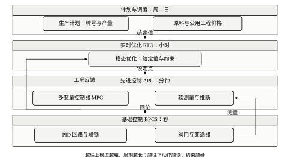
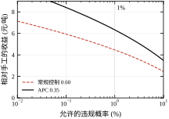
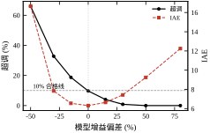
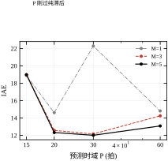
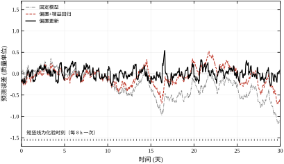
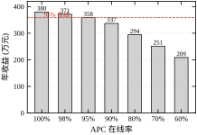
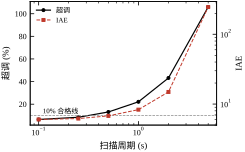
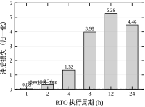
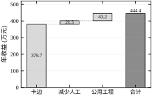

某炼厂的航煤干点控制，手工操作时质量曲线长期停在 87 附近，距离 90 的上限还有三个单位。问操作员为什么不往上提，回答很实在：不敢。原料一换、负荷一动，这条线就抖，抖到 90 一次，全罐就要降级，损失按罐算。
上了先进控制之后，同一条曲线贴着 89 走，一年下来少烧的燃料折合三百八十万元。设备没换、仪表没换、催化剂没换，变的只是“敢不敢靠近上限”这件事。
敢与不敢，背后是一个可以算的量：波动的标准差。手工操作时干点的标准差约 1.2 个单位，要保证只有 1% 的时间越限，均值只能压到 87.2。先进控制把标准差压到 0.35，同样 1% 的风险下，均值可以抬到 89.2。两个数一减，就是 1.98 个单位的操作空间，乘以每单位 3.2 元的能耗成本，再乘六十万吨年产量，就是那三百八十万。
这条账说明高级应用的价值来源：不是算法更聪明，而是把“不确定性”变小了，从而把“保守裕度”换成了钱。
现代流程工业的控制系统通常画成四层，图 112-1 是它的标准形态。

最上面是计划与调度，周期以周和日计，决定这个月生产什么牌号、多少量、用哪批原料。第二层是实时优化，简称 RTO，周期以小时计，在给定牌号与价格的条件下算出最优的操作点。第三层是先进控制，通常就是多变量预测控制，周期以分钟计，负责把装置平稳地送到那个操作点，并处理变量之间的耦合与约束。最下面一层是基础控制，周期以秒计，也就是第 106 章讲的那些 PID 回路，负责把阀位调到该在的地方。
四层的分工可以用一句话概括：上面定“去哪里”，下面管“怎么去”。表 112-1 把每层的职责、周期、典型变量与失效后果列在一起。
| 层 | 周期 | 典型变量 | 失效后果 |
|---|---|---|---|
| 计划与调度 | 周—日 | 牌号、产量、原料配比 | 库存与交期失衡，装置仍能运行 |
| 实时优化 RTO | 小时 | 操作点、约束边界 | 运行在次优工况，收益下降 |
| 先进控制 APC | 分钟 | 设定点、阀位协调 | 退回手动，波动变大 |
| 基础控制 BPCS | 秒 | 阀位、流量、温度 | 回路失稳，可能触发联锁 |
这张表里最值得看的是最后一列。四层的重要性是从下往上递减的：底层坏了会停车，顶层坏了只是少赚钱。这个顺序决定了两件事：一是投用顺序必须自下而上，基础回路没整定好就上 MPC，等于在沙地上盖楼；二是维护资源的分配必须反过来，底层要保可用率，顶层要保收益。
层与层之间只传“给定值”，不直接操作阀门。这条约定不是形式主义。上层如果绕过下层直接动阀，下层就失去了对手动自动切换、限幅、抗饱和的全部保护，出问题时也查不出是谁动的。
时间尺度还要拉开。相邻两层的周期至少差五到十倍，否则上层还在算，下层已经变了，两层会互相追着跑。第 76 章讲切换系统时给过一个驻留时间的概念，这里的道理相同：上层的一次决策必须在下层已经稳定的前提下才有意义。
把 APC、RTO、软测量、卡边控制放在一起看，会发现它们在数学上是四套不同的东西，在工程上却做的是同一件事：把操作点推到约束边界附近，同时把违反约束的概率控制在可接受的水平。
这里的约束有四种。第一种是质量约束，比如干点不高于 90、硫含量不高于 10 ppm。第二种是设备能力约束，比如压缩机转速上限、加热炉炉管温度上限。第三种是安全裕度，比如塔压与安全阀定压之间必须留的那一段。第四种是环保约束，比如烟气排放。
四种约束的共同点是：它们都不是“越远越好”，而是“越近越省钱，越界就出事”。于是问题变成一个有边界的优化，边界的位置由波动决定。
这个视角能解释很多现象。为什么同样的控制器，在平稳工况下收益很大、在原料频繁切换时收益很小？因为切换期间波动本来就大，可卡边的距离被吃掉了。为什么有些装置上了 APC 却不愿投？因为约束本身是人为加的保守值，模型算出来的“最优”在操作员看来是“冒险”，两边对风险的定义没对齐。
本章讲四件事：四层结构如何分工与衔接；卡边收益怎么算、波动与裕度怎么换算；MPC 在现场的工程实现要点与在线维护；软测量、RTO、DCS/SCADA 的运维接口。
本章不讲四件事：批次控制的配方与 ISA-88 模型在第 109 章；软测量的建模算法在第 110 章；预测控制的推导与稳定性在第 58、80 章；PID 整定在第 44、106 章。这样安排的理由是，高级应用在现场失败的原因，八成不在算法，而在“投用之后没人维护”。
一个典型的时间线是这样的：项目上线，收益达到设计值的九成；三个月后，操作员发现某个约束太紧，手动改宽了；半年后，原料变了，模型没跟着变，控制品质下降，操作员开始频繁干预；一年后，在线率掉到六成，收益只剩三成，管理层认为“这套东西不行”。
这条时间线上没有一处是算法错了。全部是维护问题。所以本章把一半篇幅放在“上线之后”。
某乙烯装置的裂解炉先进控制，投用时在线率 96%，年收益按设计是四百多万元。第三个月，一台引风机检修，操作员把相关回路切了手动，检修结束后忘了切回。第六个月，原料轻质化，炉出口温度的最优值整体下移，模型没更新，控制器每天有六七个小时在跟约束打架，操作员一看见报警就切手动。
到年底统计，在线率 41%，实际收益不到设计值的三分之一。事后复盘，三个原因：没有在线率考核、没有模型更新触发条件、没有把“切手动”这件事记录进台账。
这个案例说明，高级应用的收益不是一条水平线，而是一条随时间衰减的曲线。维护决定它衰减多快。§112.6 会把这条曲线量化成“在线率—收益”的关系，§112.10 会给出让它衰减得慢一些的具体做法。
§112.2 给出四个可算的关系：卡边收益、模型失配、软测量偏差、RTO 滞后损失。§112.3 是项目从可行性研究到移交的步骤。§112.4 与 §112.5 分别处理连续过程与批次过程，后者的重点是批次间的 run-to-run 控制。§112.6 用五组仿真说明参数与性能的关系。§112.7 解释每个参数在工程上对应什么。§112.8 给出调参顺序与常见错误。§112.9 讨论 RTO 与 APC 的协调和收益分解。§112.10 是落地清单与运维。§112.11 划边界。§112.12 是代码。
这一章假设读者已经知道三件事：PID 回路怎么整定（第 44 章、第 106 章）、状态空间与最小二乘是什么（第 20 章）、以及过程工业的基本流程（精馏、反应、换热）。三件事缺一件，读起来会卡在某一节。
不需要的准备也有三件，这里说明一下，免得读者去补不必要的内容。第一，不需要会推导预测控制的稳定性，那是第 58 章与第 80 章的事；本章只说“什么条件下不稳”，不说“为什么”。第二，不需要精通优化算法，本章用到的二次规划只用到它的结论，不涉及求解器的实现。第三，不需要现场经验，但如果有，会更容易理解“为什么操作员会切手动”这类问题。
阅读顺序建议按 112.2、112.6、112.4、112.5、112.7、112.8 走。先看能算的关系，再看参数的影响，然后看两类装置的具体做法，最后看怎么调。112.3 与 112.10 偏项目管理，可以留到要做项目时再读。112.12 是代码，边看边跑效果最好。
如果时间只够读一节，读 §112.2。那一节的四个式子，解释了这一章全部的经济逻辑。
把“贴着上限走”写成优化问题，形式很简单。设质量指标为 y，上限为 y_{\max}，可操作变量为 u，经济收益随 y 接近上限而单调增加，那么问题就是
\max_{u}\; J(y)\quad \text{s.t.}\quad y=g(u)\le y_{\max},\;\; u\in\mathcal{U} \tag{112-1}
若 g 单调、J 单调，最优解一定落在边界 y=y_{\max} 上。这是卡边控制的理论形态。
但现场不能真的把均值放在边界上。原因只有一个：y 是随机的。同一组操作条件下，y 每时每刻都在均值附近波动，均值等于上限意味着有一半时间越限。所以真实的问题是把均值推到“边界减去一个裕度”的位置，而这个裕度由波动的分布决定。
于是问题从“约束优化”变成了“约束优化加概率约束”：
\Pr\{y>y_{\max}\}\le p_{\text{allow}} \tag{112-2}
p_{\text{allow}} 是允许的违规概率，由质量损失、返工成本、客户要求共同决定。它不是一个技术参数，是一个经济参数，必须由生产与质量部门签字确认。这一点常被忽略：工程师按 1% 设计，质量部门以为“绝不会越限”，两边对同一个系统的期望就不一致。
设 y 在均值附近近似服从正态分布，标准差为 \sigma，均值到上限的距离为 d。单侧越限概率是
p(d,\sigma)=\frac{1}{2}\,\mathrm{erfc}\!\left(\frac{d}{\sqrt{2}\,\sigma}\right) \tag{112-3}
反过来，给定允许概率 p，所需裕度是
d=z_p\,\sigma \tag{112-4}
其中 z_p 是标准正态的单侧分位点：p=1\% 时 z=2.326，p=0.1\% 时 z=3.090，p=5\% 时 z=1.645。
这两个式子几乎解释了本章全部的经济账。裕度与标准差成正比，比例系数只由风险偏好决定。所以“减小波动”与“抬高均值”是同一件事的两种说法：\sigma 减半，等于把可用的操作空间扩大一倍。
数字上看一眼。\sigma=0.35、d=1.0 时，违规概率是 2.14\times10^{-3}；d=1.4 时降到 3.17\times10^{-5}；d=2.0 时是 5.5\times10^{-9}。裕度从 1.0 加到 2.0，违规概率降了五个数量级，代价是少赚 1.0 个单位的能耗。这条曲线非常陡，说明“多留一点裕度”在概率上是极划算的，在经济上却未必——这正是卡边控制要做的取舍。

图 112-2 把两条等风险曲线画在一起，横轴是裕度，纵轴是违规概率，两条线分别对应 \sigma=1.20 与 \sigma=0.35。两条线在同一个概率水平上的水平距离，就是“减小波动”换来的操作空间。这个距离在 1% 的概率上约为 1.98 个单位，它就是后文反复出现的那个“卡边距离”。
设每提高一个单位 y 节省的成本为 c（元/吨），年产量为 W（吨），改造前后的裕度分别为 d_1 与 d_2，则年收益是
\Delta J=c\,(d_1-d_2)\,W \tag{112-5}
本章的算例取 y_{\max}=90、c=3.2 元/吨、W=60 万吨、p=1\%。手工操作 \sigma=1.20，裕度 2.79，均值 87.21；常规控制 \sigma=0.60，裕度 1.40，均值 88.60；先进控制 \sigma=0.35，裕度 0.81，均值 89.19。表 112-2 把三档放在一起。
| 工况 | 标准差 \sigma | 裕度 d | 操作均值 | 相对手工的收益 |
|---|---|---|---|---|
| 手工操作 | 1.20 | 2.79 | 87.21 | 0 |
| 常规控制 | 0.60 | 1.40 | 88.60 | 4.47 元/吨 |
| 先进控制 | 0.35 | 0.81 | 89.19 | 6.33 元/吨 |
从手工到常规控制，收益 4.47 元/吨；从常规控制到先进控制，再增加 1.86 元/吨。注意后一段的绝对值小，但相对投入也小：常规控制靠的是把基础回路整定好，先进控制靠的是多变量协调，两者的工程量不在一个量级上。
按 60 万吨年产量折算，先进控制相对手工的年收益是 6.33\times60=379.7 万元。这个数字就是后面所有讨论的基准。
还有一层要说明：表 112-2 里三档的违规概率都是 1%，不合格品率并没有改善。所以这 379.7 万元全部来自能耗与收率，不含质量损失。如果改造同时降低了不合格品率，收益还要再加，但那部分要单独核算，不能混在一起。
先进控制的核心是下面这个二次型问题：
\min_{\Delta u}\; \sum_{i=1}^{P}\big\|\Gamma\,(y_{k+i}-r_{k+i})\big\|^2 +\sum_{j=0}^{M-1}\big\|\Lambda\,\Delta u_{k+j}\big\|^2 \quad \text{s.t.}\quad y_{k+i}=g(u),\;\; u_{\min}\le u\le u_{\max} \tag{112-6}
P 是预测时域，M 是控制时域，\Gamma 是输出权重，\Lambda 是增量权重，r 是设定点。这是第 58、80 章推导过的形式，这里只讨论它在现场怎么落地。
落地时有三个改动。第一，y 不是全部可测，一部分来自软测量，其可信度要用权重体现。第二，约束分软硬两级，硬约束绝不能违反，软约束可以带罚函数。第三，r 不是常数，它由 RTO 或操作员给出，并且必须经过速率限制，否则上层一跳变，下层就饱和。
本章不重复推导，只给一个结论：在没有约束、模型准确的情况下，这个二次型问题的闭环等价于一个带滤波的 PI 控制，等效比例增益随 P 增大而减小、随 M 增大而增大。这个结论是 §112.6 解释时域参数作用的依据。
模型不准是常态。设真实增益为 K，模型增益为 K_0，相对偏差为 \delta=(K_0-K)/K，则控制器按模型整定出来的开环增益与实际开环增益之比是
\frac{L_{\text{true}}}{L_{\text{design}}}=\frac{K}{K_0}=\frac{1}{1+\delta} \tag{112-7}
\delta<0 表示模型低估了增益，实际回路比设计时更“冲”，超调变大；\delta>0 表示高估，实际回路变“钝”，响应变慢但更稳。
这条式子看起来平淡，但它给出了一个非常有用的判据：模型增益偏差 30% 时，实际开环增益变化 43%。对于相位裕度只有 30 度的回路，43% 的增益变化足以让它从“有振荡”变成“等幅振荡”。这也解释了为什么先进控制项目里，阶跃测试的功夫要下在增益上，而不是在时间常数上。
§112.6.1 会给出完整的扫描结果：偏差 -50\% 时超调从 9.7% 涨到 66.0%，偏差 +50\% 时超调降到 0 但 IAE 涨了 46%。
软测量的输出可以写成两个参数的线性形式：
\hat{y}_k=\alpha_k+\beta_k\,x_k \tag{112-8}
x 是容易测的二次变量（温度、压力、流量），\alpha 是偏置，\beta 是增益。实验室化验给出 y 的真值，两者一比就得到残差。
残差可以分解成两部分：偏置漂移与增益漂移。偏置漂移来自催化剂老化、结垢、传感器零点漂移，表现为残差整体平移；增益漂移来自工况范围变化、非线性区段移动，表现为残差随 x 变化。
这个分解决定了更新策略。如果残差主要是平移，那么只需更新 \alpha，一个化验点就够；如果残差随 x 变化，才需要重新辨识 \beta，而重新辨识需要 x 有足够的激励。数据里没有激励却硬要辨识两个参数，结果一定比只辨识一个更差。
§112.6.3 的仿真会给出这个结论的量化版本：同样的数据，偏置更新的 RMSE 是 0.127，偏置加增益回归是 0.223。多辨识一个参数，误差反而大了七成。
RTO 每隔一段时间算一次最优操作点，两次之间保持不变。设真实最优操作点为 x^*(t)，实际保持的值为 \hat{x}，经济损失近似为二次型
J_{\text{lag}}=k_e\,\mathbb{E}\big[(\hat{x}-x^*)^2\big] \tag{112-9}
k_e 是经济系数。若最优操作点以角频率 \omega 漂移、幅值为 A，保持时间为 T，则滞后误差约为 A\omega T/2，代入得 J_{\text{lag}}\approx k_e A^2\omega^2T^2/4。损失随时段平方增长。
这条式子给出两个判断。第一，RTO 周期不能拍脑袋定，它应该由最优点的漂移速度决定：漂移快（原料频繁切换）就缩短周期，漂移慢就拉长。第二，当 T 大到与漂移的特征时间相当时，损失饱和在 k_e\mathrm{Var}(x^*)，再拉长周期也不会更差，因为此时“保持”与“随便取一个常数”没有区别。
数字控制系统里，采样保持与通信会引入额外的纯滞后。经验公式是
\theta_{\text{eff}}=\theta+1.5\,T_s \tag{112-10}
T_s 是扫描周期（含通信与控制器执行时间），系数 1.5 来自采样保持的半个周期加上计算与传输的一个周期。这条式子是近似的，但对工程判断足够。
它解释了一个常见现象：同一个回路，在实验室 0.1 s 扫描时很稳，到了 DCS 上 1 s 扫描就开始摆。按式 112-10，后者多了 1.35 s 的等效滞后，对于一个时间常数 5 s 的快回路，这是 27% 的相位损失。
先进控制的收益与在线率近似成正比，但要扣掉每次下线后的恢复成本：
J_{\text{actual}}=u\,J_0-n_{\text{rec}}\,c_{\text{rec}} \tag{112-11}
u 是在线率，J_0 是满在线时的年收益，n_{\text{rec}} 是年恢复次数，c_{\text{rec}} 是每次的恢复成本（含人工、重新整定、产量损失）。
按本章的算例，J_0=379.7 万元，每年 12 次恢复、每次 4 万元：在线率 95% 时实际收益 358.3 万元，80% 时 294.2 万元，60% 时 208.6 万元。从 95% 掉到 80%，损失 64.2 万元，相当于白干两个月。
这条式子最重要的含义是：在线率的每一个百分点都值 3.8 万元。这个换算让“运维投入”第一次有了可比的价格。
本章用到的量分三类，混淆它们是计算错误的主要来源。
第一类是“工程单位量”，比如质量指标（单位、摄氏度、ppm）、流量（吨/小时）、成本（元/吨）。这些量的数值取决于装置与产品，不同装置之间不可比。
第二类是“归一化量”，比如偏差、权重、概率。它们无量纲，用于比较与加权。\Gamma 与 \Lambda 都应该作用在归一化量上，否则量纲不同的变量之间无法加权。
第三类是“时间量”，比如 \tau、\theta、T_s、P。这一类最容易出错，因为同一个符号在不同章节可能用不同单位：P 在式 112-6 里是“拍数”，在讨论工艺时又常被说成“多少分钟”。写文档时必须在每个参数后面标注单位，读文档时要先确认单位。
举一个具体的换算：T_s=45 s、P=90 拍，对应物理时域 90\times45=4050 s，即 67.5 分钟。这个数大于塔的纯滞后（约 25 分钟）加一个时间常数（约 20 分钟），符合 §112.6.2 的规则。如果误把 P 当成“分钟”，就会得出 90 分钟，虽然碰巧也能用，但推导过程是错的。
量纲检查有一个简单办法：把式子里所有量写成“数值 × 单位”，看两边是否一致。§112.2.3 的式 112-5 左边是“万元/年”，右边是“元/吨 × 单位 × 吨/年”，单位对得上，数值要除以 10^4 才换成万元。这个小细节在代码里最容易漏，漏了就会得到“3797000 万元”这种荒谬的数。
一个先进控制项目从想法到产生收益，可以拆成九步：收益机会识别、可行性研究、变量与约束梳理、阶跃测试、模型辨识、控制器设计、离线仿真、投用与整定、移交与运维。
九步的顺序不能颠倒，但工作量不是均匀的。经验上，前两步决定项目“值不值得做”，中间三步决定“做不做得成”，后四步决定“能不能持续”。多数失败的项目，问题出在第九步，而根因往往在前两步没有把边界条件谈清楚。
每一步都要有一个可交付物。第一步的交付物是一张收益估算表，第二步是一份可行性结论，第三步是变量清单，第四步是测试记录，第五步是模型文件，第六步是控制器组态，第七步是仿真报告，第八步是投用记录，第九步是运维手册。没有交付物的步骤，等于没做。
不是所有装置都适合上先进控制。判断标准可以压缩成三条。
第一条：波动是否可以减小。如果当前波动主要来自外部扰动（原料性质大幅波动、上下游频繁切换），控制器能做的很有限。诊断办法是看操作变量是否已经在频繁动作——如果阀位在正常工况下就大幅来回，说明扰动已经穿透到执行层，先解决扰动源比上 APC 更有效。
第二条：约束是否真实。有些“约束”是历史上为了保险加的，实际设备能力还有余量。这种约束下，先进控制算出来的最优点会让操作员觉得“冒险”，投用阻力极大。正确顺序是先用一次标定把真实约束测出来，再上控制。
第三条：操作是否足够频繁。如果操作员一天只调两次，手工操作的波动本来就小，APC 的收益不足以覆盖维护成本。反过来，如果一个班要调几十次，说明工况变化快、人工跟不上，这正是 APC 的用武之地。
三条都满足，才进入下一步。有一条不满足，先做基础回路整定或者仪表改造——那些工作的投入产出比通常更高。
变量清单要分四类：被控变量、操作变量、干扰变量、约束变量。
被控变量是要稳住或推到目标值的量，比如塔顶温度、产品质量。操作变量是控制器可以动的量，比如回流量、加热蒸汽量。干扰变量是可测但不可控的量，比如进料量、进料温度，它们进入前馈通道。约束变量是有上下限但不能直接控制的量，比如塔压、液位。
四类变量之外还要标三件事：每个变量的量程、扫描周期、是否可信。可信度这一项最容易被忽略。一个没有质量位的软测量值，在传感器故障时会给出一个“看起来合理”的数，控制器照着它动作，后果比直接失效更严重。
约束要分硬软两级。硬约束是绝不能越的，比如设备超压、催化剂超温；软约束是可以短暂越一点的，比如产品质量指标。硬约束在控制器里作为不可违反的边界，软约束用罚函数处理。分级的依据不是“重要程度”，而是“越界的后果是否可逆”。
阶跃测试的目的是拿到每个操作变量对每个被控变量的动态关系。测试设计有四个要点。
第一，测试幅度要够大。幅度太小，信噪比不够，辨识出来的增益不可信；幅度太大，会触发报警或影响质量。经验值是让被控变量变化 3 到 5 倍于噪声标准差，同时不越出正常操作范围。
第二，测试要覆盖工作点。如果装置有多个典型负荷，每个负荷都要测。只在一个负荷点测出来的模型，换到另一个负荷点可能增益差一倍。
第三，测试要互相错开。多个变量同时动，辨识时分不清是谁的作用。工程上常用伪随机序列或逐步阶跃，让每个变量的激励在时间上尽量不相关。
第四，测试期间要记录所有相关变量，包括没有被激励的量。这些“没动的量”是干扰，辨识时要作为可测干扰处理，否则它们的变化会被错误地归因到操作变量上。
测试数据要留存原始版本，不要只存处理过的。三年后模型需要重辨识时，原始数据是唯一能复现当时工况的东西。
辨识这一步，第 20 章讲过子空间方法，第 105 章讲过过程辨识的工程做法，这里只说与先进控制直接相关的三点。
第一，模型阶次要低。先进控制用的是阶跃响应模型或低阶状态空间模型，阶次过高会带来两个问题：辨识出的高频模态不可信，控制器会去追这些模态。工程上常见的做法是把每个通道压到一阶加纯滞后或者二阶加纯滞后。
第二，增益优先。式 112-7 说明了增益误差的后果远大于时间常数误差。辨识时如果两者不可兼得，宁可时间常数差 20%，也要把增益校准到 10% 以内。
第三，要给出不确定度。同一个通道用不同时段的数据辨识，会得到不同的参数。把这些差异记下来，就是模型不确定度的估计。控制器设计时用它来决定权重和约束裕度。
控制器设计包括四件事：选被控变量与操作变量的配对、定预测时域与控制时域、定权重、定约束。配对的原则是相对增益阵（第 108 章）接近 1，时域与权重的整定见 §112.7 与 §112.8。
控制器设计好之后，不能直接投用。中间要过两道关。
第一道是离线仿真。用辨识出来的模型做闭环仿真，看三件事：设定点跟踪是否平稳、约束是否被违反、操作变量是否动作过多。仿真时要把模型误差加进去，用 §112.6.1 的方法扫描一遍增益偏差，确认在 \pm30\% 的范围内闭环仍然稳定。
第二道是影子模式。控制器接真实数据运行，但输出不送到阀，只记录下来与操作员的实际动作对比。这一阶段能发现仿真发现不了的问题：操作员在什么情况下会切手动、哪些报警是误报、约束在什么工况下会同时触顶。
影子模式通常要跑够覆盖主要工况的时间。太短的话，只看到平稳段，看不到切换段的问题，而切换段恰恰是最容易出事的。
投用要分批。先投最稳的回路，让操作员建立信心；再投有耦合的回路；最后投带约束的、会主动卡边的回路。每一批投用后至少观察一个完整的生产周期，确认没有异常再投下一批。
投用时必须同时打开三样东西：在线率统计、约束触顶记录、操作员干预记录。这三样是后面所有运维决策的数据基础。没有它们，§112.10 的月报就无从谈起。
移交的标志不是“验收签字”，而是三件事到位：操作员知道什么时候该切手动、工程师知道模型什么时候该更新、管理层知道收益怎么算。三件事缺一件，项目就会在半年内退化。
移交文档里必须有一页“边界条件”：这个控制器在什么工况下不适用、哪些变量故障时必须切手动、哪些约束是硬的。这一页是后面所有人判断“能不能用”的依据。
测试方案不是“到时候看着办”，而是一份可以交给班组执行的表格。一份能用的方案至少包含六项。
第一项是目的与通道清单。写清楚要辨识哪几个通道，每个通道的输入是什么、输出是什么、预期增益的量级。这一步的作用是让执行的人知道“动这个阀会影响什么”，避免误操作。
第二项是幅度与序列。每个输入给多大的阶跃、正负各几次、间隔多久。经验值是幅度取正常操作范围的 5% 到 10%，正负交替，间隔覆盖 3 到 5 个时间常数。
第三项是约束与停止条件。测试期间哪些变量不能越限、越限后谁来叫停。这一项最容易被漏掉，而它恰恰是“测试能不能被批准”的关键。
第四项是数据清单。记录哪些位号、采样周期多少、存到哪里。除了被激励的变量，所有可能影响的干扰变量都要记。
第五项是人员与时间。谁操作、谁监护、谁记录，安排在哪个班次。多数企业把测试安排在夜班或者低负荷时段，这时扰动小、风险低。
第六项是回退方案。测试中如果出现异常，怎么恢复到测试前的状态，多久能恢复。这一项要写到“操作员看一眼就知道怎么做”的程度。
六项齐了，方案才算完整。实际执行时，第二项与第三项往往要现场微调，这很正常，但调整的依据要记录在案。
连续过程占了流程工业的大部分：常减压、催化裂化、乙烯裂解、连续重整。它们的先进控制有三个共同特征。
第一，稳态是目标。连续装置的大部分时间运行在一个相对稳定的工作点附近，控制的任务是把这个点守住、并慢慢往更经济的点推。这与伺服控制“跟随一个变化的指令”不同，更像调节控制“抵抗扰动”。
第二，扰动持续存在。进料量、进料性质、环境温度、公用工程压力，这些量一直在变，而且大部分不可控。先进控制的价值一半来自抑制这些扰动，一半来自卡边。
第三，时间尺度宽。塔的响应时间从几分钟（压力）到几十分钟（产品质量）不等，同一个控制器里同时有快变量和慢变量，这是预测控制必须用多时域的原因。
三个特征合起来，决定了连续装置的先进控制要以“稳态优化 + 动态协调”的方式工作，而不是单纯追求快速跟踪。
连续装置里的约束不是平权的，要分层。
第一层是设备保护约束，比如塔压不超过安全阀定压的 90%、炉管壁温不超过材质上限、压缩机不进入喘振区。这一层绝不允许违反，在控制器里作为硬约束，并且要在外面再加一层联锁兜底。
第二层是质量约束，比如干点、闪点、硫含量。这一层允许短暂越界，但越界要计入统计。控制器里作为软约束，越界时用罚函数拉回。
第三层是经济约束，比如回流量不超过某个值、蒸汽用量不超过配额。这一层是“建议”，违反只影响成本，不影响安全与质量。控制器里作为优化目标的一部分。
分层的意义在于优先级。当三层约束同时触顶、无法同时满足时，控制器必须知道先放弃哪一个。多数商用软件用“优先级 + 松弛变量”实现：高优先级约束的松弛变量权重极大，低优先级的权重小。这样求解器会自动牺牲低优先级的约束。
现场常见的一个错误是把质量约束设成硬约束。后果是：一旦工况让质量无法满足（比如原料突然变差），控制器就进入不可行状态，输出卡死或者乱跳。正确做法是质量约束软处理，同时把“不可行”这件事报出来让人处理。
不可行是先进控制最常见的故障形态。它的表现是：控制器算不出解，或者算出的解让某些约束被违反。
原因有三类。第一类是约束本身矛盾，比如“塔压不超过 X”与“处理量不低于 Y”在某个工况下无法同时满足。第二类是操作变量到了极限，比如所有的阀都开足了还是达不到设定点。第三类是模型与实际偏差太大，控制器以为能做到，实际做不到。
处理办法分三步。第一步是检测：控制器要能把“不可行”作为一个明确的状态报出来，而不是默默输出一个违反约束的解。第二步是降级：按优先级逐个放松软约束，直到可行。第三步是交还：如果放松到极限仍不可行，自动切手动，并记录当时的工况。
第三步最容易被省略，也最危险。一个“算不出解但仍然输出上一个值”的控制器，会让操作员误以为它在工作，实际上装置已经脱离了控制。
连续装置通常同时追求三个目标：产量最大、质量合格、能耗最低。这三个目标在约束边界上会冲突。
产量最大要求提高处理量，处理量提高会缩短停留时间，产品质量变差，于是要加大回流或者提高温度，能耗上升。三者的关系可以用一个简单的边际分析描述：每增加一吨处理量带来的边际收益，与因此增加的边际能耗成本，在最优处理量处相等。
卡边控制把这个关系具体化了。质量指标越靠近上限，能耗越低；但越靠近上限，越限风险越大。所以真正的最优点不是“质量最好”也不是“能耗最低”，而是“在给定风险下，边际收益等于边际风险成本”那一点。
这个点在数学上是式 112-2 的约束下的式 112-1 的最优解。在工程上，它由三个数决定：能耗系数 c、允许违规概率 p、当前波动 \sigma。三个数任何一个变了，最优点就要重算。这就是为什么先进控制需要定期维护——不是模型坏了，是这三个数变了。
先进控制内部通常再分两层：稳态目标计算与动态控制。
稳态目标计算解决“应该在哪”，它是一个线性或二次规划问题，输入是当前工况、经济系数、约束，输出是一组稳态目标值。这一层不考虑动态，只考虑“到了那里是否可行、是否最经济”。
动态控制解决“怎么去”，它就是式 112-6 的预测控制，输入是稳态目标与当前测量，输出是阀位增量。这一层要考虑速率限制、阀的行程、变量之间的动态耦合。
两层分开的好处是职责清晰。稳态层出问题，表现为“目标点不对”；动态层出问题，表现为“到不了目标点”或者“到了但不稳”。运维时一眼就能分辨是哪一层的问题。
两层之间的接口要加速率限制。稳态目标如果一步跳变，动态层会饱和，饱和又会导致抗饱和逻辑动作，最后表现为“设定点变了但阀没动”。工程上的做法是给每个目标值加一个变化率上限，通常取该变量正常调节速度的三分之一。
以本章开头的航煤干点为例，把上面的概念串一遍。
被控变量有两个：塔顶干点（质量，慢，滞后约 25 分钟）与塔压（快，滞后约 1 分钟）。操作变量有三个：回流量、塔顶采出量、再沸器蒸汽量。干扰变量有两个：进料量与进料温度。约束有四个：干点上限 90、塔压上限、再沸器负荷上限、回流比下限。
稳态层的任务是：在干点不超过 90 的前提下，让再沸器蒸汽量最小。解出来是一个“干点贴着上限、回流比贴着下限”的操作点。
动态层的任务是：把干点稳在这个点上，同时用回流量与采出量的协调来抵抗进料扰动。这里有一个耦合：回流量增加会降低干点，但也会增加塔压；采出量增加会提高干点，同时降低塔压。两个操作变量对两个被控变量的作用方向不同，正好可以解耦。
按 §112.2 的算例，手工操作时干点均值 87.21、标准差 1.20；先进控制把标准差压到 0.35，均值抬到 89.19。同样的 1% 违规概率，多赚 6.33 元/吨。
这个例子里最容易被忽略的是“回流比下限”这条约束。它是一条经济约束，来自节能要求。当干点往上卡时，回流比会往下走，走到下限就卡住，此时干点再也上不去。也就是说，真正限制卡边距离的往往不是质量上限，而是另一条不起眼的约束。§112.7.3 会把这件事讲成一个通用的检查项。
再换一个装置，看同一套方法在“快慢混杂”的场合怎么用。
某加氢反应器，被控变量是反应器出口硫含量（质量，滞后约 40 分钟）、床层温度（快，滞后约 30 秒）、循环氢纯度（中等，滞后约 5 分钟）。操作变量是补充氢流量、循环氢流量、冷氢流量。约束是床层温度上限（催化剂保护，硬）、硫含量上限（质量，软）、循环氢纯度下限（设备，硬）。
这个装置的特点是三个被控变量的时间常数差三个数量级。用单回路控制时，温度回路必须调得很快，硫含量回路必须调得很慢，两者通过氢分压耦合，互相干扰。这是典型的“用 SISO 工具处理 MIMO 问题”，效果差是必然的。
用预测控制之后，三个变量在一个优化问题里同时处理。但这里有一个新问题：扫描周期该取多少。取 30 秒跟随温度，硫含量的模型就要用很长的预测时域（80 拍以上），矩阵规模大、计算慢；取 5 分钟跟随硫含量，温度回路就完全失控。
工程上的解决办法是“分层扫描”：快变量用短周期（10 秒）单独做一层控制，慢变量用长周期（2 分钟）做另一层，慢层的输出作为快层的设定值。这实际上是 §112.4.5 的“稳态与动态分工”在时间尺度上的推广。
分层的代价是两层之间的协调变复杂。慢层算出硫含量的目标对应的氢分压，快层要把氢分压分解成三个阀的动作。分解的办法是一个小型的静态优化，通常用线性规划，目标是“三个阀的动作量之和最小”。
这个例子的经验是：当时间常数跨越两个数量级以上时，不要试图用一个控制器解决，先按时间尺度分层，再在每一层内用预测控制。这与第 76 章讲的“多时间尺度”是同一个道理，只是这里落在控制器结构上。
再看一个耦合弱、约束多的场合，它与前两个例子的做法不同。
某厂蒸汽系统有四台锅炉、三个压力等级。被控变量是三个等级母管的压力，操作变量是各台锅炉的负荷与减温水量，约束是每台锅炉的负荷上下限、炉膛负压、给水流量。
这个系统的特点不是耦合强，而是“组合多”：四台锅炉怎么分配负荷，有三自由度；每台锅炉又受自己的约束限制。手工操作时，操作员通常让几台锅炉平均分配，看起来很公平，但能耗不是最低——小锅炉的效率低，应该让它少带负荷。
先进控制在这里做的不是“更好的回路控制”，而是“更好的负荷分配”。它的核心是一个线性规划：在满足总负荷与各台约束的前提下，让总燃料量最小。这个问题的解通常是“效率高的满负荷、效率低的带余量”，与平均分配完全不同。
这类应用的收益主要来自能耗，而不是卡边。经验数据是蒸汽系统的负荷优化能省 1% 到 3% 的燃料，对一个中型厂来说，这与一个卡边项目的收益同量级，但实施难度低得多——因为它不需要精确的动态模型，只需要准确的效率曲线。
代价是它依赖效率曲线的准确性。效率曲线通常来自设计数据或者性能试验，运行几年后会偏离。所以这类项目要配一个“性能监测”功能：定期用实测数据反算效率，发现偏离就更新曲线。
这个例子说明，先进控制的价值不只在“预测”与“约束”，也在于“把组合优化的问题交给算法”。后者往往更容易落地，因为它对模型精度的要求低，对经济性的要求高。
批次过程与连续过程有三点本质差别，这三点决定了控制结构完全不同。
第一，有始有终。一个批次从投料到出料是一个完整周期，周期可能是几小时，也可能是两天。控制的目标不是“守住一个稳态”，而是“让每一批的结果一致”。
第二，质量滞后到批次结束才可见。连续过程的质量可以每半小时取样，批次过程往往要等出料后做全分析。这意味着控制回路里有一个天然的、以“批”为单位的采样周期。
第三，优化对象是批次间的偏移。批次内的轨迹由配方固定（第 109 章），能调的是下一批的初始条件、设定点、终止判据。所以这里的“控制”实际上是一个迭代学习过程。
第 109 章讲的是 ISA-88 的配方模型：主配方、控制配方、单元过程、阶段状态机。它回答“这一批按什么步骤走”。
本节讲的是另一个问题：上一批的结果偏了，这一批的设定该怎么改。前者是顺序控制，后者是批次间反馈。两者在同一个控制器里共存，但属于不同的层：配方层决定步骤与参数表，run-to-run 层决定参数表里某几个数的修正量。
分清这一层很重要。如果把修正量写进配方，每批都要改配方，版本管理会失控；如果修正量只存在控制器内存里，换型或者重启就丢了。正确做法是把修正量作为“配方参数的偏移量”单独存，并记录每次修改的依据。
最常用的是指数加权移动平均（EWMA）方案。设第 k 批的模型为 y_k=d+b\,u_k，d 是截距，b 是增益，u_k 是本批的设定。每批结束后测得 y_k，用 EWMA 更新截距估计：
\hat{d}_k=\lambda\,(y_k-b\,u_k)+(1-\lambda)\,\hat{d}_{k-1}, \qquad u_{k+1}=\frac{y_{\text{sp}}-\hat{d}_k}{b} \tag{112-12}
\lambda\in(0,1] 是遗忘因子。\lambda=1 表示只用最新一批，收敛最快但抖动最大；\lambda 小表示相信历史，平稳但对工况变化反应慢。
这个结构本质上是一个积分控制器，只不过积分发生在“批次”这个离散时间轴上。它的稳定性条件是 0<\lambda\le1，与增益 b 的估计误差无关——因为更新的是截距，不是增益。这一点很重要：只要 b 大致准确，EWMA 一定收敛；b 错了，收敛的是“错误的稳态”。
批次内的轨迹跟踪仍然由 PID 或前馈完成，做法与第 109 章讲的阶段控制一致。这里只补充一个与 run-to-run 相关的要点：批次内的控制品质会影响 run-to-run 的估计。
如果批次内温度波动大，最终质量指标的散布就大，run-to-run 从这样的数据里估出的截距噪声也大。此时应该先改善批次内控制，再谈批次间优化。顺序反了，就会看到“越调越乱”的现象：每一批都在修正，但修正量本身是噪声。
判断办法是看批次内的关键变量标准差。如果它已经和批次间的偏移量同量级，run-to-run 就没有意义了。
批次间的采样周期是“一批”，这意味着控制器的带宽极低。任何比一批更快的扰动，run-to-run 都看不见，也不该去追。
这条限制带来两个工程约定。第一，run-to-run 只修正“系统性偏移”，不修正随机波动。判据是连续多批同向偏移，而不是单批偏差。第二，run-to-run 的修正量要限幅，通常不超过配方允许范围的 5%，防止一次异常数据把设定带偏。
还有一个容易忽略的问题：批次的测量有分析延迟。如果质量分析要等 8 小时，那么第 k 批的结果到第 k+2 批才拿到，控制律里就有一个纯滞后。处理办法是同时估计“在制品”的状态，或者把修正量的作用延后两批。前者更准，后者更简单。
设某聚合反应釜的目标分子量为 100，初始标定截距 104.0，第 7 批因原料更换阶跃到 102.2，批间噪声 0.35。分别取 \lambda=0.2 与 \lambda=0.6，按式 112-12 递推，结果列在表 112-3。
| 批号 | \lambda=0.2 偏差 | \lambda=0.6 偏差 |
|---|---|---|
| 1 | 0.55 | 0.55 |
| 2 | -0.58 | -0.80 |
| 3 | 0.27 | 0.41 |
| 4 | -0.03 | -0.08 |
| 5 | 0.42 | 0.41 |
| 6 | -0.09 | -0.26 |
| 7 | -1.68 | -1.71 |
| 8 | -1.62 | -0.97 |
| 9 | -1.80 | -0.89 |
| 10 | -0.98 | 0.10 |
| 11 | -0.29 | 0.54 |
| 12 | -0.22 | 0.22 |
前六批两种参数都在 ±0.8 内波动，看不出差别。第 7 批原料更换，两种参数都掉到 -1.7 附近。此后的恢复速度开始分化：\lambda=0.6 用四批回到 ±0.5，\lambda=0.2 用了五批。
但快不等于好。看第 10 到 12 批：\lambda=0.6 冲到 +0.10 又到 +0.54，明显在过冲；\lambda=0.2 从 -0.98 平滑地收到 -0.29、-0.22。如果质量指标的容差是 ±0.5，那么 \lambda=0.6 在第 11 批就已经越界，而 \lambda=0.2 全程没有越界。
这就是 run-to-run 的典型取舍：快与稳不可兼得，选哪个取决于两件事——工况变化的频率，与容差带的宽度。原料三班一换，就该选快一点；原料稳定但容差很紧，就该选慢一点。
现场还有一个折中办法：平时用小的 \lambda，检测到连续三批同向偏移时临时切到大 \lambda，恢复后再切回。这叫“带触发的自适应遗忘因子”，实现只多几行判断，效果比固定 \lambda 好。
run-to-run 的效果高度依赖数据组织。批次数据与连续数据不同：它不是一条连续的时间序列，而是一批一批的“记录”，每批有自己的起止时刻、工况、分析结果。
组织方式建议按三层。第一层是“批次头”，记录批号、配方版本、开始与结束时间、操作班组、原料批次。第二层是“批内轨迹”，记录关键变量在整个批次内的时间序列，采样周期通常 1 到 10 秒。第三层是“批末结果”，记录化验值、收率、合格判定。
三层之间用批号关联。批号必须唯一且不可重用，这一点看起来是废话，但很多企业的批号在跨年时会重复，导致历史数据串批。修正办法是加年份前缀或者用时间戳作为主键。
数据质量要有标记。一个批次如果中途停过车、手动干预超过阈值、或者关键仪表坏过，就要标记为“不可用于建模”。这类批次不剔除，会让 run-to-run 学到一个错误的截距，而且很难从结果上看出来。
还有一个实践问题：批内轨迹的采样频率高、批次数多，数据量增长很快。一个装置一年几千批，每批几万点，几年就是几十 GB。存储上要做降采样或者分段归档，但要保留“批末结果”的完整精度，因为它是控制的依据。
最后一点是关于“可比性”。run-to-run 只有在“这批与上批可比”的前提下才有意义。配方换了、原料换了、设备检修过，都不再可比。系统要能自动识别这些事件，并在事件后重置或者加权，否则修正量会追着不可比的变化跑。
前面五节讲的是“怎么做”，这一节讲“做得怎么样”。判断一个先进控制是否合格，不能只看它能不能把设定点跟住，还要看它在模型不准时是否安全、在参数选错时退化多少、在数据缺失时会不会给出错误结论。这一节的六组结果都来自 code/ch112_sim.py，对象是一个时间常数 20 s、纯滞后 5 s 的一阶惯性环节，数字可以完全复现。
仿真设定如下：真实对象增益恒为 1.0，控制器按一个“以为的增益” K_0 整定，比例增益取 K_c=\tau/\big((\lambda+\theta)K_0\big)，积分时间取 T_i=\tau，\lambda=5 s。K_0 从 0.5 到 1.8 变化，对应模型增益偏差 -50\% 到 +80\%。每个偏差下做一次单位阶跃，记录超调、绝对误差积分（IAE）与调节时间。
结果列在表 112-4，图 112-3 把超调与 IAE 画在一张双轴图上。

| 增益偏差 | K_0 | K_c | 超调 (%) | IAE | 调节时间 (s) |
|---|---|---|---|---|---|
| -50\% | 0.500 | 4.00 | 65.99 | 16.656 | 101.5 |
| -30\% | 0.700 | 2.86 | 32.80 | 7.844 | 46.5 |
| -15\% | 0.850 | 2.35 | 18.75 | 6.553 | 37.0 |
| 0\% | 1.000 | 2.00 | 9.72 | 6.317 | 27.0 |
| +15\% | 1.150 | 1.74 | 4.02 | 6.648 | 28.0 |
| +30\% | 1.300 | 1.54 | 0.86 | 7.429 | 19.0 |
| +50\% | 1.500 | 1.33 | 0.00 | 9.250 | 28.5 |
| +80\% | 1.800 | 1.11 | 0.00 | 12.250 | 43.5 |
这张表最重要的一点是不对称。模型增益低估一半，超调从 9.7% 涨到 66.0%，IAE 涨了 1.6 倍，闭环已经在振荡边缘；模型增益高估一半，超调反而降到 0，只是 IAE 涨了 46%、调节时间多了 1.5 s。前者是“危险”，后者是“迟钝”。
原因在式 112-7。控制器按 K_0 算出的 K_c 反比于 K_0，而闭环的开环增益正比于 K_c K。K_0 低估，K_c 就偏大，实际开环增益偏大，相位裕度被吃掉；K_0 高估，K_c 偏小，开环增益偏小，闭环变慢但稳定。
这个不对称直接给出了辨识的优先级：宁可把增益估大一点，也不要估小。工程上常见的做法是在辨识结果上乘一个 1.05 到 1.10 的保守系数，代价是略微变慢，换来的是不会因为一个偶然的辨识误差把回路推到振荡。
表里还有一处值得注意：偏差从 +30\% 到 +50\% 时，调节时间从 19.0 s 反弹到 28.5 s，到 +80\% 更是 43.5 s。这不是噪声，而是 IAE 与调节时间的定义在起作用——闭环太慢时，2% 的误差带要到很晚才进得去。也就是说，“高估增益”虽然安全，但超过一定程度后性能退化也开始加速，不能无限制地保守。
动态矩阵控制（DMC）的两个核心参数是预测时域 P 与控制时域 M。式 112-6 只写了形式，没说 P 和 M 该取多大。这一节用一组扫描回答。
对象参数同上，采样周期 0.5 s，纯滞后对应 10 个采样拍。取 P=15,20,30,60 拍，M=1,3,5，权重 \lambda=2.0，只执行第一个控制增量。
| P (拍) | M=1 超调/IAE/调节 | M=3 超调/IAE/调节 | M=5 超调/IAE/调节 |
|---|---|---|---|
| 15 | 35.52 / 18.893 / 100.5 | 35.53 / 18.979 / 101.0 | 35.53 / 18.986 / 101.0 |
| 20 | 26.27 / 14.618 / 174.5 | 24.74 / 12.573 / 90.5 | 24.27 / 12.325 / 90.5 |
| 30 | 20.56 / 22.281 / 280.0 | 18.52 / 12.163 / 90.0 | 17.90 / 12.011 / 77.0 |
| 60 | 5.05 / 14.811 / 85.0 | 5.00 / 14.249 / 82.5 | 5.57 / 13.086 / 78.5 |

先看 P。P=15 时，预测时域只比纯滞后多 5 拍，控制器“看不到”阶跃的稳态，算出来的控制增量偏大，超调 35.5%，而且无论 M 取多少都改不了——因为信息不足，多给自由度也没用。P 增到 30 拍，超调降到 18% 到 21%；P=60 拍（即 30 s，等于纯滞后加一个时间常数）时，超调降到 5% 左右。
由此得到第一条经验：P 至少覆盖“纯滞后 + 一个时间常数”。低于这个值，控制器是短视的；再往上加，收益递减。按采样拍算，本章对象需要 P\ge(5+20)/0.5=50 拍，与表中 P=60 最好一致。
再看 M。P=15 时 M 完全无用，因为预测本身就不可信。P=20 时 M 从 1 增到 3，IAE 降 14%，调节时间从 174.5 s 砍到 90.5 s；再从 3 增到 5，IAE 只降 2%。P=30 时同样的规律，M=1 的调节时间 280 s 是病态的——单个控制增量要负责整个时域的误差，解出来的增量过大，闭环来回摆。
M 的作用是“给未来留出修正余地”。M=1 相当于“只动一次、之后不动”，这在 P 很大时要求第一步就猜对全部；M=3 到 5 允许后续修正，控制增量的总变差急剧下降。同一组数据里，P=30 时 M 从 1 增到 5，控制增量的总变差从 166.41 降到 12.06，降了一个数量级。阀门动作少了，磨损和能耗都跟着降。
第二条经验：M 取 3 到 5 就够了，再多收益饱和，反而增加计算量。这与文献里“控制时域 3 到 10”的说法一致，偏保守的一侧。
§112.2.6 说软测量的误差分偏置漂移与增益漂移两类，§112.7 会给出参数含义。这一节量化三种更新策略的差别。
构造一份 30 天的数据：真实关系是 \hat{y}=\alpha+\beta x，\alpha 在这 30 天里从 0 漂到 +1.093，\beta 有 ±8% 的波动，x 只有日常的小幅波动（没有大负荷变化），每天有一次化验值可用来校正。三种策略分别是：模型固定不更新、只更新偏置、同时回归偏置与增益。
结果：固定模型的预测 RMSE 为 0.402；只更新偏置为 0.127；同时更新两者为 0.223。

只更新偏置最好，这不是巧合。真值的漂移极差是 1.533，几乎全部落在偏置方向上；而 x 没有激励，增益在数据里几乎不可辨识。此时强行回归两个参数，等于用一份信息量不足的数据解两个未知数，方差被放大，RMSE 比只解一个参数差了 76%。
由此得到软测量维护的第一条铁律：没有激励就不辨识增益。判断“有没有激励”的办法是看 x 的标准差与量程：如果一个月里 x 只在均值的 ±5% 内波动，增益的置信区间会宽到没有意义。此时正确的做法是冻结增益，只用化验值更新偏置。
第二条：偏置更新要用滤波，不能用最新一次化验值直接替换。化验本身有分析误差，直接替换等于把分析误差全部注入模型。工程上常用 EWMA，\lambda 取 0.2 到 0.3，与 §112.5.3 的 run-to-run 是同一套逻辑。
第三条：什么时候可以辨识增益？当 x 出现足够大的变化时。典型触发条件是负荷变化超过 10%、或者原料切换导致工况移动。此时采集一段窗口数据（通常覆盖 3 到 5 个时间常数），做一次带约束的回归，通过显著性检验后才替换增益，否则保留原值。这条规则写进运维手册，比写进代码更重要。
图 112-5 的下半部分画的是三条误差曲线随时间的走势。固定模型的误差单调爬升，因为偏置一直在漂；只更新偏置的误差围绕零上下波动，量级与化验误差相当；同时更新的误差在头几天更小，因为增益的初值碰巧接近，但从第十天起波动明显变大。这个“先好后坏”的形态正是过参数化的典型表现。
先进控制不是装上就一直在线的。仪表故障、分析仪标定、装置检修、模型重辨识、操作员切手动，每一次都会让控制器下线一段时间。§112.2.9 给了公式，这一节把它算成数。
以本章的卡边收益 379.7 万元为满在线基准，每年按 12 次恢复、每次 4 万元计，不同在线率下的实际收益如下：100% 时 379.7 万元，98% 时 371.1，95% 时 358.3，90% 时 336.9，80% 时 294.2，70% 时 251.4，60% 时 208.6。

这串数字有两个用法。
第一个用法是给运维定价。从 95% 降到 90%，少赚 21.4 万元；从 90% 降到 80%，少赚 42.7 万元。如果把在线率从 85% 提到 95%，一年多赚约 32 万元。这个数可以直接和一个专职维护工程师的成本对比：一个懂模型、会整定、能改控制器的人，年成本大致在这个量级。也就是说，在线率低于 90% 的先进控制项目，加一个专职维护岗在经济上是划算的。
第二个用法是识别“假在线”。有些项目报表上写着在线率 98%，实际是把“控制器没有报错”当作在线。真正的在线率要满足三个条件同时成立：控制器处于自动、输出确实在驱动阀门、关键仪表与软测量都是良好质量位。只统计第一个条件的在线率没有经济意义，因为它把“自动但输出被限幅卡死”也算成了在线。
图 112-6 里画了一条 95% 的参考线，这不是行业标准，而是经验上“维护正常”的分界。低于这条线，说明运维流程里有系统性缺口，需要查的不是控制器参数，而是备件、标定周期与人员安排。
还有一点与直觉相反：在线率不是越高越好。为了把在线率从 96% 推到 99%，往往要把控制器调得很保守，宁可少卡边也不冒险。此时在线率上去了，单点的收益强度下来了，总收益可能反而下降。正确的目标是“总收益最大”，不是“在线率最高”。
式 112-10 给了附加时滞的估算，这一节看它对闭环的实际影响。同一套 PI 参数（按 0.5 s 扫描整定），把控制器更新周期依次改成 0.1、0.25、0.5、1.0、2.0、5.0 s，做单位阶跃。
结果：超调依次为 6.48%、8.42%、13.12%、22.10%、43.19%、105.91%；IAE 为 6.017、6.201、6.770、8.319、14.915、245.618；按式 112-10 折算的相位损失为 0.9、2.1、4.3、8.6、17.2、43.0 度。

三点结论。
第一，0.5 s 是这套参数的“设计点”，超调 13.1%，与 §112.6.1 表里的 9.7% 有差别，因为这里的 PI 是在离散化之后实现的，采样保持本身已经吃了半个周期的相位。这说明仿真时用连续控制器、投用时用离散控制器，性能会缩水，缩水的量级就是 1.5 个采样周期带来的相位。
第二，从 1 s 到 5 s，性能不是缓慢退化而是断崖。IAE 从 8.3 跳到 245.6，涨了近 30 倍，超调翻倍。原因是 5 s 的扫描周期加上 5 s 的纯滞后，等效滞后到了 12.5 s，接近时间常数 20 s 的 60%，闭环已经接近不稳定边界。
第三，快回路的扫描周期不能按“够用”选，要按“相位损失可接受”选。经验判据是 T_s\le\theta/5 且 T_s\le\tau/10。本章对象 \theta=5、\tau=20，两个条件都指向 T_s\le1 s。这与工业上“流量压力回路 0.5 到 1 s、温度回路 1 到 2 s、成分回路 5 到 30 s”的惯例一致。
这条结论在工程上有直接后果：把一个原本在 PLC 上 0.1 s 跑得很好的算法搬到 DCS，如果 DCS 的扫描周期是 1 s，必须重新整定，不能照搬参数。反过来，如果一个回路在 DCS 上怎么整定都不稳，先查扫描周期与通信延迟，再查阀门。
把上面五组结果与 §112.2 的卡边算例放在一起，可以得到一张“看什么指标、正常范围是多少”的表。
| 指标 | 含义 | 本章数值 | 判断标准 |
|---|---|---|---|
| 卡边距离 | 均值到上限的距离 | 2.79 → 0.81 | 由 \sigma 与允许违规概率定 |
| 阶跃超调 | 设定点阶跃的最大越过量 | 5%–13% | 温度/成分回路 <20% |
| IAE | 误差绝对值的积分 | 6.3–13.1 | 同工况下比较，不看绝对值 |
| 增益失配容限 | 闭环仍稳定的模型偏差 | -30\% 起明显恶化 | 辨识误差控制在 ±15% |
| 软测量 RMSE | 预测值与化验值之差 | 0.127（只更新偏置） | 小于质量容差的 1/3 |
| 在线率 | 真正闭环运行的时间占比 | 95% 为正常 | 低于 90% 需查运维 |
| RTO 周期 | 稳态优化重算间隔 | 2–8 h | 由最优点漂移速度定 |
| 扫描周期 | 控制器更新周期 | 0.5–1 s | T_s\le\theta/5 |
表 112-5 的最后一列不是标准，而是经验区间。用它的方法是：先看实际值落在区间的哪一侧，再看偏离的原因是什么。落在区间内不代表没问题，落在区间外也不一定有问题——比如一个特别慢的热过程，超调 25% 也可能完全可接受。指标的用处是引导提问，不是替代判断。
指标之间还有耦合，不能单独优化。把超调压到 0 很容易，把控制器调慢就行，代价是 IAE 上升、抗扰变差；把 IAE 压到最小也很容易，把控制器调快就行，代价是阀门动作剧烈、在线率下降。真正要优化的是一个加权组合，权重由装置的经济性决定，不由控制器的默认值决定。
前面的阶跃都是“设定值阶跃”，工业现场更多的却是“扰动阶跃”：设定值不变，进料量突然变了。两者对控制器的要求不同，用同一套参数往往顾此失彼。
设定值跟踪时，误差来自指令，控制器“知道”目标在哪里，可以按模型规划一条最优路径。扰动抑制时，误差来自对象输入端，控制器是“被动发现”输出偏了才动作，中间隔着纯滞后与时间常数。同样的参数下，扰动响应的恢复时间通常比跟踪响应长 1.5 到 2 倍。
这个差别在预测控制里有明确的体现。跟踪问题里，未来误差的预测只含“设定值变化”与“历史控制增量”两项；扰动问题里还多了一项“未知扰动的影响”，控制器只能用“输出偏差”去反推它，这个反推过程本质上是一个观测器，带宽受噪声限制。
工程上的三条对策。
第一，能测的扰动一定做前馈。进料量、进料温度、公用工程压力，这些量如果有在线仪表，就把它们作为前馈通道写进模型。前馈的作用是“在扰动影响输出之前就抵消它”，它绕过了反馈的滞后，效果远好于把反馈调快。
第二，不能测的扰动靠反馈，但要接受速度限制。反馈的抗扰速度上限由纯滞后决定：任何比纯滞后更快的扰动，反馈在物理上不可能及时响应。此时唯一的办法是减小扰动本身（缓冲罐、混合器）或者增加裕度。
第三，跟踪与抗扰要分别验收。投用时只做设定值阶跃，验收时看着很好，投产后遇到扰动却不合格。正确的做法是两类试验都做：设定值阶跃看超调与调节时间，扰动阶跃（比如手动改一个进料阀）看恢复时间与最大偏差。两个指标都进验收报告。
这条区分还解释了一个常见困惑：为什么同一个控制器，在“改设定值”时表现很好，在“进料波动”时却像换了一个人。不是控制器坏了，而是这两件事对带宽的要求不同，而带宽只有一个。
先进控制的输入是测量值，测量值里有噪声。噪声进入控制器，会被放大成阀门动作，这是“阀频繁小幅动作”的最常见原因。
滤波是第一道防线。一阶滤波 y_f(k)=y_f(k-1)+\alpha\,[y(k)-y_f(k-1)]，\alpha 越小滤波越强。它的代价是相位滞后，滞后量约为 (1-\alpha)/\alpha 个采样周期。§112.7.6 说过滤波与扫描共享同一个相位预算，所以不能靠加大滤波来解决所有噪声问题。
第二道防线是死区。测量值与模型预测值之差小于死区时不做修正。死区的大小取噪声标准差的 1 到 2 倍，太小没效果，太大会让控制器对小偏差不敏感，卡边距离被吃掉。
第三道防线是增量权重。\Lambda 本质上是在“噪声放大”与“跟踪速度”之间做取舍，加大 \Lambda 等价于降低带宽。
判别噪声是否“该滤”，看它的频谱。如果噪声集中在高频（采样噪声、电气干扰），滤波有效；如果噪声是低频漂移（仪表漂移、工况漂移），滤波无效，该做的是校正或者重标定。用错手段的典型表现是“滤得越重，偏差越大”——因为把真实的漂移也滤掉了。
还有一个容易混淆的现象：阀门粘滞也会表现为小幅振荡。它看起来像噪声放大，实际是执行机构的问题。判别办法是看阀位与输出指令是否一致：指令在变、阀位不动，是粘滞；两者同步小幅抖动，是噪声。前者要修阀，后者要滤波，弄反了都解决不了。
先进控制的参数比 PID 多，但真正需要现场工程师决定的没有几个。这一节按“改一个参数、会看到什么变化”的方式，逐个说明它们的作用、量级与相互影响。表 112-6 是汇总，后面各小节展开。
| 参数 | 物理含义 | 典型取值 | 调大的后果 |
|---|---|---|---|
| P 预测时域 | 向前看多远 | 覆盖 \theta+\tau，50–120 拍 | 更稳，计算量上升 |
| M 控制时域 | 允许几次自由调整 | 3–5 | 更平滑，约束响应变慢 |
| \Gamma 误差权重 | 各被控变量的重要度 | 按经济价值定 | 该变量被压得更紧 |
| \Lambda 增量权重 | 抑制阀门动作 | 1–10 | 阀门动作少，跟踪变慢 |
| \lambda 遗忘因子 | EWMA 对新数据的信任度 | 0.2–0.3 | 收敛快，抖动大 |
| T_s 扫描周期 | 控制器更新间隔 | 0.5–1 s | 相位损失增大 |
| z_p 风险系数 | 允许违规概率对应的分位点 | 2.33（1%）、3.09（0.1%） | 裕度变大，收益下降 |
P 回答“向前看多远”。它不是一个可以随便取大的参数，取小了控制器短视，取大了计算量与模型误差都被放大。
从 §112.6.2 的扫描看，P 的下限由纯滞后决定：P 必须大于纯滞后的拍数，否则控制器看到的输出里还没有任何对本次操作的响应，等于在开环猜。实际取值要再加一个时间常数，让预测窗口内能看到响应的“主体”。
上限由模型可信度决定。预测越远，模型的误差被放大得越多，尤其是增益误差：P 拍的预测值含 P 次增益误差的累积。工程做法是把 P 定在“到稳态的 95%”处，再留 20% 的余量。
P 与 T_s 是绑定的。同一个物理时域，T_s 减半，P 的拍数就翻倍。所以现场说“P 取 60”时必须同时说“T_s 是多少”，否则这个数没有意义。这一点在交接文档里经常漏写。
M 回答“未来允许几次自由调整”。M=1 表示只算一步、之后保持不变，这是最保守的结构；M=P 表示每一步都自由，这是最激进的结构。
M 的经济含义是“阀门动作的总变差”。M 小，控制增量集中在少数几步，阀门动作幅度大；M 大，增量分散到多步，动作平滑。§112.6.2 里 P=30 时 M 从 1 到 5 使总变差从 166.41 降到 12.06，就是这个道理。
但 M 不能无限增大。M 接近 P 时，问题退化成“每步都自由”，解的自由度过大，矩阵条件数变差，数值上不稳定；同时模型的高频误差会被利用，出现“控制器追着噪声动”的现象。经验值是 M 取 P 的 1/10 到 1/5，绝对值控制在 3 到 5。
M 还有一个隐藏作用：它决定了控制器对约束的反应速度。M 小的时候，一旦某个约束要触顶，控制器只有一步可以调整，只能大幅动一次；M 大的时候可以分几步慢慢退让，过程更平滑。所以在有硬约束的场合，M 不宜取 1。
\Gamma 是一个对角阵，每个被控变量一个权重。它的作用是告诉控制器“哪个变量更不准偏”。
定权重的方法不是拍脑袋，而是折算成钱。设变量 i 偏离设定值一个单位的经济损失是 c_i，那么权重取 \gamma_i\propto c_i。这样控制器最小化的加权平方误差，近似等于最小化经济损失。这是把控制问题与经济问题接起来的唯一一座桥。
权重的绝对值不重要，比例才重要。把所有 \Gamma 乘 10，解出来的控制增量完全一样（因为 \Lambda 也要同比缩放）；但把某一个 \gamma_i 乘 10，控制器就会牺牲其他变量来保它。
权重的第二个作用是处理“量纲不同”。干点的单位是摄氏度，塔压的单位是千帕，两者的数值差几个量级。如果不做归一化，控制器实际上只在乎数值大的那个变量。标准做法是先把每个变量除以它的允许偏差，再乘经济权重。
权重定好之后不要频繁改。权重一变，控制器的最优解就变，操作员会觉得“同样的工况，昨天和今天动作不一样”。改权重必须走变更管理，并且通知操作员。
\Lambda 惩罚控制增量的平方，作用是抑制阀门动作。它与 PID 里的微分时间有点像，但作用机制不同：微分是对误差的变化率加权，\Lambda 是对控制增量的幅度加权。
\Lambda 调大，闭环变慢、超调减小、阀门磨损下降；调小，跟踪变快、抗扰变强、阀门动作剧烈。它是最常用的“一个旋钮”，因为它的效果单调、可预测。
\Lambda 的量级与 \Gamma 相关。单独说“\Lambda=2”没有意义，必须说“相对于 \Gamma 是多少”。工程上把它写成无量纲形式 \lambda=\Lambda/\Gamma，取值范围通常 0.1 到 10。§112.6.2 用的 \lambda=2.0 属于偏保守的一侧。
有一个常见误用是把 \Lambda 当作“稳定器”。回路不稳时加大 \Lambda 确实能让它稳下来，但代价是把带宽压得很低，抗扰能力同时消失。正确的诊断顺序是：先查模型增益（§112.6.1）、再查扫描周期（§112.6.5）、最后才动 \Lambda。
式 112-12 里的 \lambda 与上面的 \Lambda 不是一回事，前者是标量、作用在批次轴上，后者是矩阵、作用在时间轴上。文献里两者常都用 \lambda，读的时候要看上下文。本章为了区分，把批间遗忘因子写成小写、把增量权重写成大写。
\lambda 的物理含义是“等效记忆长度”。\lambda=0.2 时，等效记忆约 1/\lambda=5 批，即当前估计大致反映最近五批的情况；\lambda=0.6 时约 1.7 批，几乎只看最新一批。
定 \lambda 的依据是“工况变化的时间尺度”与“测量噪声的大小”之比。工况变得快、噪声小，取大 \lambda；工况稳定、噪声大，取小 \lambda。§112.5.6 的算例里，容差 ±0.5、原料三班一换，两个 \lambda 各有优劣，折中方案是带触发的自适应。
\lambda 的稳定性没有悬念：只要 0<\lambda\le1，式 112-12 一定收敛。但它收敛到的值取决于增益 b 的准确性。b 高估 20%，稳态偏差就是目标值的 20%，而且这个偏差不会被 \lambda 修正掉——因为 \lambda 修正的是截距，不是增益。这是 run-to-run 最常见的失效模式。
T_s 不是一个“控制参数”，而是一个“系统参数”，它由 DCS 组态决定，改起来比改控制器参数麻烦得多。但它的影响比多数控制器参数更大。
§112.6.5 已经给出定量结果：T_s 从 0.5 s 增到 5 s，IAE 涨 30 倍。这个量级说明，选 DCS 扫描周期时不能按“CPU 负载够不够”来定，要按“最慢的回路能不能接受”来定。
实际操作中，一个先进控制器内部往往有多个扫描任务：快变量（压力、流量）1 s，慢变量（温度、成分）5 到 30 s，优化层几分钟一次。这些任务的同步关系要写清楚，否则会出现“用 30 s 前的温度去配 1 s 前的压力”这种时间错配。时间错配的后果不是精度下降，而是控制器误判工况、做出错误动作。
T_s 还要与滤波时间常数匹配。一阶滤波的时间常数通常取 T_s/2 到 T_s，太大则引入额外滞后，太小则滤波无效。滤波与扫描是同一个相位预算里的两项，不能分别优化。
z_p 是 §112.2.2 里那个分位点，它不写在控制器里，而是写在“设定点计算”里。它的取值直接决定卡边距离，也直接决定收益。
z_p 的选择本质是一个风险偏好问题，但它可以被量化。设每次越限的损失是 L（返工、降级、客户投诉），每年越限次数是 n，则年损失为 nL。把 z_p 增大一档，越限概率下降，但卡边距离增大、收益下降。最优的 z_p 使“边际收益损失 = 边际风险损失”。
工程上的实际取值：质量指标通常取 1% 到 5%（z_p=2.33 到 1.65），安全相关指标取 0.1%（z_p=3.09），环保指标按法规要求定，往往比 0.1% 更严。这些数不是算出来的，是行业惯例加企业风险政策的结果，但它们给了一个起点。
z_p 每年要复核一次。复核的内容不是 z_p 本身，而是它背后的两个量：\sigma 有没有变（仪表、阀门、工况改变都会影响），L 有没有变（产品价格、客户要求改变会影响）。这两个量变了，z_p 对应的最优点就变了，此时不改 z_p 才是错的。
§112.7 说明了每个参数“是什么”，这一节说明“怎么调”。调参的顺序比调参的数值重要，顺序错了会在几个参数之间来回救火。
正确的顺序是五步，每一步都要在前一步“定下来”之后再做。
第一步，把基础回路整定好。先进控制的下层是基础控制，下层的阀如果摆、下层如果积分饱和，上层的任何参数都调不出来。判断标准是：所有基础回路在手动扰动下能快速稳定、没有持续振荡、阀门不粘滞。这一步不属于先进控制项目，但它是前提。
第二步，校模型。用阶跃测试的数据重算一遍增益与时间常数。模型不准时，调 P 与 M 只能碰运气。校验办法是开环预测：用模型预测未来 5 分钟的输出，与实测对比，误差应该小于噪声的两倍。
第三步，定 P 与 M。按 §112.6.2 的规则，P 覆盖纯滞后加一个时间常数，M 取 3 到 5。这两个参数定下来后，闭环的基本形态就确定了：是偏激进还是偏保守。
第四步，定权重。按经济价值折算 \Gamma，按阀门动作量定 \Lambda。这一步要在“多个被控变量同时有偏差”的工况下试，因为只有这种工况才能看出权重在起作用。
第五步，定约束与优先级。这一步放最后，因为约束的效果要等控制器有其他参数都合理之后才看得清。约束定得太早，会掩盖其他参数的问题。
五步之间不能跳。跳过第一步的项目，后面所有工作都在一个不稳定的地基上；跳过第二步的项目，参数永远调不到点子上。
错误一：用调 PID 的思路调 K_c。 先进控制里没有“比例增益”这个旋钮，但很多人会去找最像它的那个参数——通常是 \Lambda，然后按“加一点、看响应、再加一点”的方式试。结果是 \Lambda 被调到很大，回路稳了但抗扰没了。正确做法是先看模型，模型对了，\Lambda 有一个合理的起点。
错误二：把 P 调得很大以求稳。 P 大确实能让响应平滑，但超过模型可信范围后，控制器是在用一个不可信的预测做决策。表现是“大扰动时动作很怪”：小扰动时正常，一遇到阶跃就过冲或者反方向动一下。
错误三：所有变量用同一个权重。 干点和塔压的量纲、量级、经济价值都不同，用同一个权重等于让数值大的变量主导。这是“控制器好像不听话”的最常见原因。
错误四：约束设成硬约束。 §112.4.2 已经说过，质量约束软处理。所有约束都设硬的后果是不可行状态频繁出现，操作员不得不频繁切手动，在线率断崖式下降。
错误五：只在平稳工况下验证。 投用前在平稳段跑得很好，一遇开工、停工、原料切换就出问题。验证必须覆盖切换段，这也是影子模式要跑够时间的原因（§112.3.6）。
把上面的步骤串成一个具体的过程，能看清每一步实际花多少精力。
某常减压装置的常压塔先进控制，从立项到移交用了五个月。第一个月做可行性研究与变量梳理，产出一张收益估算表（年收益 420 万元）与一份 46 个变量的清单。第二个月做阶跃测试，共 12 组，每组 4 到 8 小时，全部安排在夜班以减少对生产的影响。
第三个月做辨识与控制器设计。辨识出 8 个操作变量对 4 个被控变量的 32 个通道，其中 6 个通道的增益置信区间超过 ±20%，重新做了测试。控制器初始参数按 §112.6.2 的规则设定，P=90 拍（45 s 扫描下对应 45 分钟），M=4。
第四个月做影子模式，跑了三周。发现三个问题：一是塔压约束在夜间负荷降低时会触顶，需要把这条约束改成随负荷变化的函数；二是回流比下限设得过紧，卡住了干点的上移空间；三是操作员习惯在交接班时切手动，导致在线率统计出现规律性缺口。三个问题都在投用前解决。
第五个月分批投用。第一批投 4 个最稳的回路，观察两周；第二批投 3 个有耦合的回路，观察一周；第三批投带卡边逻辑的回路，观察三周。移交时的在线率是 96.2%，实际收益按三个月平均折算年化 386 万元，略低于估算值，主要差在开工率上。
这份记录里值得注意的两点：一是影子模式发现的问题，两个是约束设置问题、一个是人的问题，都不是算法问题；二是实际收益低于估算，差额来自估算时假设的满负荷，而实际有检修。这两点在多数项目里都会出现。
调参时遇到的问题大多可以归到有限的几类。表 112-7 是一张对照表，左边是现象，中间是可能原因，右边是验证办法。用法是先按现象查表，再用验证办法确认，不要凭感觉改参数。
| 现象 | 可能原因 | 验证办法 |
|---|---|---|
| 设定点阶跃后长时间不回 | 增益低估、M 过小 | 加大 K_0 10% 重跑，看是否改善 |
| 稳态有小幅持续振荡 | \Lambda 过小或扫描周期过长 | 单独加大 \Lambda，再单独减 T_s |
| 大扰动时反向动作一下 | P 超出模型可信范围 | 把 P 减半，看是否消失 |
| 阀门频繁小幅动作 | 噪声进入、\Lambda 过小 | 加滤波或加大 \Lambda，观察总变差 |
| 某个变量总也压不住 | 权重过小、或被别的约束卡住 | 查约束触顶记录，再调权重 |
| 频繁进入不可行 | 硬约束过多、约束互相矛盾 | 打印约束松弛量，逐条放松 |
| 操作员频繁切手动 | 动作不符合操作习惯、报警过多 | 看干预记录，找共同工况 |
| 收益低于估算 | 在线率低、卡边距离没到位 | 看月报，分别核算两者 |
表里的“验证办法”有一个共同特点：每次只改一个量，看结果往哪个方向变。同时改两个量，即使问题消失了也不知道是哪个起的作用，下一次还会犯同样的错。
每一次参数修改都要留记录：改了什么、为什么改、改前改后的关键指标、谁批准的。这不是形式主义，原因有三个。
第一，先进控制的参数之间有耦合，三个月后回看“为什么 \Lambda 是 3.5 而不是 2”，没有记录就只能重新试一遍。第二，交接班与人员流动会让参数失去上下文，新来的人不敢动、也不会动，控制器就慢慢退化了。第三，出问题时需要追溯，尤其是涉及质量与安全的场合，参数修改记录是责任链的一部分。
记录的最小字段是六项：时间、参数名、原值、新值、依据、批准人。依据要写具体，比如“7 月 12 日原料切换后干点偏差持续 +0.8，把 \Gamma 中干点权重从 1.0 调到 1.5”，而不是“优化权重”。
这些记录最好直接存在控制器组态的历史里，与版本绑定。存在个人电脑上的 Excel 等于没有——人一走就丢了。
调参有一个自然的终点，识别它比会调更重要。
终点之一是“指标已经进入表 112-5 的合理区间，且不再随参数微调明显改善”。此时继续调只是在拟合噪声，换一个工况就会退化。
终点之二是“改参数的效果不如改流程”。如果发现 80% 的偏差来自原料切换，那么优化切换流程的收益远大于调控制器。这时候该做的是去找生产调度，不是继续坐在 DCS 前面。
终点之三是“问题出在硬件”。阀门粘滞、变送器漂移、分析仪滞后，这些靠参数补不回来。§112.6.5 里 5 s 扫描导致 IAE 涨 30 倍的例子说明，硬件与系统层面的限制会盖过所有参数优化。
判断自己是否已经越过终点，有一个简单的自检：过去一个月改的参数，有几个是在“验证一个新假设”，有几个是在“把上周改过的改回去”。如果后者居多，说明已经在原地打转，该停下来重新做一遍模型校验。
问：设定点阶跃时超调很大，但抗扰很好，要不要改？
先看超调来自哪里。如果超调发生在阶跃后的第一个波峰，且峰值时间接近纯滞后，说明是控制器“动得太猛”，加大 \Lambda 或者减小 M 都能改善。如果超调出现在第二个波峰之后，说明是积分作用过强或者模型增益偏小，应该查模型，而不是压 \Lambda。
还要看这个阶跃是谁给的。如果设定点由 RTO 给出，而 RTO 每次只动一点点，那么“大阶跃”在正常生产里根本不会发生，为它牺牲抗扰是不划算的。正确的做法是给设定点加一个斜坡或者一阶滤波，让阶跃变成缓变，这样既不损失抗扰，也不会超调。
问：两个被控变量总是不能同时到位，怎么办？
这是典型的“自由度不够”。先数一数：被控变量几个、操作变量几个、有效约束几个。如果操作变量数减去触顶的约束数小于被控变量数，那么数学上就不可能同时到位，再怎么调参数也没用。
此时的选择有三个：增加一个操作变量（比如多开一个阀）、放松一个约束（比如允许某个变量有稳态偏差）、或者接受“轮流到位”（用优先级让重要的先到）。三者都是工艺决策，不是控制参数能解决的。
问：控制器在白天很好，夜班就差，为什么？
先排除人的因素：夜班操作员是否更频繁地切手动、是否改了设定值。看干预记录就能确认。
如果没有人为干预，就查工况：夜班负荷通常更低，对象的增益与时间常数会变。如果模型是按满负荷辨识的，低负荷时增益偏大，闭环就会偏激进，表现为“白天稳、夜里摆”。解决办法是增益调度（按负荷切换两组参数）或者把模型改成随负荷变化的线性参数模型。
这三种问答有一个共同点：先用数据确认“是不是控制参数的问题”，再动参数。跳过确认直接调，往往会调出一个“白天好、夜里还是差”的新参数。
前面的内容都是“把现有的先进控制用好”，这一节讲“怎么让它更值钱”。有三个方向：把优化层的周期配对、把收益分项算清、把改进项按性价比排序。
稳态优化（RTO）与先进控制（APC）是上下两层，它们之间最容易出问题的地方是周期不匹配。
RTO 每隔一段时间算一次最优操作点，算出来交给 APC 作为目标。如果 RTO 周期太短，目标点频繁跳动，APC 一直在追新目标，阀门动作剧烈；如果太长，目标点跟不上工况变化，看起来“优化没起作用”。§112.2.7 的式 112-9 说损失随时段平方增长，但会饱和。
用一组数看这个权衡。设最优操作点由三个分量叠加而成：17 小时的主周期、29 小时的次周期、240 小时的原料周期，再加上标准差 0.10 的测量噪声。RTO 周期从 1 小时拉到 24 小时，滞后损失依次为 0.081、0.343、1.320、3.984、5.263、4.463（单位与 k_e 一致）。加上不可消除的噪声损失 0.080，合计为 0.161、0.423、1.400、4.064、5.343、4.543，相对 1 小时的倍数是 1.00、2.63、8.72、25.31、33.27、28.29。

这张图有两点值得说。
第一，4 小时是一个明显的分界。从 1 小时到 4 小时，损失涨 8.7 倍；再往后涨得慢。原因是最快的分量是 17 小时，周期取 4 小时还能大致跟上它，取 8 小时就完全跟不上了。经验规则是 RTO 周期取最快漂移分量周期的 1/4 到 1/6。
第二，12 小时比 24 小时更差，这看起来违反直觉。原因是当周期接近日周期时，采样点与漂移的相位“锁”在一起，总是采在同一个相位上，误差被系统性地放大；再拉长到 24 小时，反而相当于取了多点平均，误差回落。这也是式 112-9 说的“饱和”：周期长到一定程度，保持一个常数与跟着漂移差不多。
这条非单调性在工程上有实际意义：RTO 周期不要取“接近某个工艺周期”的值，要么明显短于它，要么明显长于它。取在中间最糟。
“这个项目一年赚多少”这个问题，答案往往是一个含糊的数。把它拆开，每一项都能被验证，说服力完全不同。
以本章的算例拆成三项。第一项是卡边收益，即波动减小带来的操作点抬升，379.7 万元。第二项是减少人工操作，操作员从每班几十次干预降到几次，按减少的工时折算 21.5 万元。第三项是公用工程优化，在同样的质量下降低回流比与蒸汽量，43.2 万元。三项合计 444.4 万元。

项目投入按 300 万元计（软件许可、工程服务、仪表改造），年维护 40 万元（备件、人力、软件升级）。净收益 404.4 万元，简单回收期 0.74 年。
分解的价值在于三项的可信度不同。卡边收益依赖 \sigma 的测量，可以被独立验证：取投用前后各三个月的历史数据，算标准差与均值，就能复核。减少人工操作依赖操作记录，也能验证，但折算成钱时的系数有主观性。公用工程优化最难验证，因为它会被其他因素（负荷、气温）掩盖，通常需要用对比期的方式估算。
写收益报告时要把这三项分开列，并注明各自的验证方式。合成一个总数会让人怀疑，分开列反而更容易被接受——因为读者能看出哪一项是硬的、哪一项是估的。
一个已经投用的先进控制，可做的改进很多：加一个软测量、换一个更好的模型、缩短扫描周期、增加一个前馈通道、把 RTO 周期从 8 小时改到 4 小时。资源有限，要排序。
排序的依据是“年收益增量 / 实施成本”，而不是“技术先进程度”。表 112-8 是一个典型的排序结果。
| 改进项 | 年收益增量 | 实施成本 | 回收期 | 难度 |
|---|---|---|---|---|
| 缩短 RTO 周期 8 h → 4 h | 22 万元 | 5 万元 | 0.2 年 | 低 |
| 修复两个质量位缺失的仪表 | 18 万元 | 8 万元 | 0.4 年 | 低 |
| 增加进料性质前馈 | 31 万元 | 25 万元 | 0.8 年 | 中 |
| 软测量加偏置自校正 | 15 万元 | 20 万元 | 1.3 年 | 中 |
| 重做塔的辨识模型 | 26 万元 | 45 万元 | 1.7 年 | 高 |
| 全装置扫描周期统一到 0.5 s | 9 万元 | 60 万元 | 6.7 年 | 高 |
表里最值钱的两项都不“高级”：一个是把 RTO 周期改一下（改一个组态参数），一个是修仪表（换变送器或者接线）。这两项的回收期都在半年以内。最不划算的是统一扫描周期，它需要动 DCS 的整体负荷分配，风险大、收益小。
这张表说明一个常被忽略的事实：先进控制项目的后续收益，大部分来自“补短板”，不是“上新技术”。短板通常是仪表、通信、周期设置这些不起眼的地方。
排序之后还要看依赖关系。比如“增加前馈”依赖“进料性质在线分析”，如果分析仪没有，这一项就要先加一个前提工程。依赖关系会把排序打乱，实际执行时要按依赖拓扑排序，再在每一层内按性价比排。
单装置的先进控制做到头之后，下一个台阶是全厂范围的协调。这一层要处理的问题与单装置不同。
第一个问题是物料与能量的平衡。单装置把质量卡到上限，可能让下游装置的处理能力不足；单装置把能耗压到最低，可能让全厂的蒸汽平衡失衡。全厂优化要把这些耦合写进约束。
第二个问题是目标的不一致。生产部门要产量，销售部门要牌号切换灵活，设备部门要长周期运行，安环部门要低排放。这些目标在数学上是多目标优化，没有唯一解，只有一组帕累托解。选哪一个由管理层决定，不由算法决定。
第三个问题是数据的可信度。全厂优化依赖大量的实时数据，其中任何一处仪表偏差都会传导到优化结果。这也是为什么全厂优化项目往往要先做一两年的数据治理。
对本课程的读者来说，这一层的意义是知道边界：单装置 APC 是“把给定目标执行好”，全厂优化是“决定目标是什么”。前者是控制问题，后者是管理加运筹问题，方法与工具都不同（第 76 章与第 113 章有相关讨论）。
任何改进项在落地前都应该在仿真里过一遍。原因不是仿真能给出准确收益，而是它能提前暴露“改进会不会破坏稳定性”。
评估的方法叫“回放”：把过去三个月的历史数据（包括扰动、操作、质量）喂给改进后的控制器，让它在线计算输出，与当时的实际操作对比。回放能回答三个问题：改进后阀门动作多了还是少了、有没有出现新的约束触顶、在异常工况下会不会做出危险动作。
回放的局限是它无法反映“控制器改变了工况”这件事。真实系统里，控制器的动作会改变装置状态，而回放用的是历史状态。所以回放只能验证“在同样的扰动下动作是否合理”，不能验证“闭环后的新稳态是否更好”。后者要靠影子模式（§112.3.6）。
回放还有一个实用价值：它是说服操作员的最有力工具。把“改进前后同一个工况下的动作曲线”并排画出来，比任何文字说明都直观。操作员接受了，改进才算真正落地。
改进不能一次全上。经验是每季度做一到两项，每项之间留出观察期。
节奏太快的后果是问题无法归因。三项改进同时上，出现异常时不知道是哪一项引起的，只能全部回退，前功尽弃。节奏太慢的后果是错过窗口：工况在变、人员在换，拖得太久，原来的改进依据就失效了。
判断节奏是否合适，看两件事：一是每项改进后是否有一个完整的对比期（通常一个月），二是改进记录是否清楚到“可以单独回退某一项”。两件事都做到，节奏就是合适的。
还要留出“不做改进”的时间。一个稳定运行的先进控制，本身就在产生收益；频繁改动会让它长期处于“刚投用、还没稳定”的状态，收益反而下降。§112.6.4 讲过在线率与收益的关系，改进期间下线的时间也要计入成本。
不是所有改进都会成功。看一个失败的例子，比看三个成功的更有用。
某乙烯装置的裂解炉先进控制，投用一年后做了一次“改进”：把原来固定 4 小时的 RTO 周期改成“事件触发”——当原料性质变化超过阈值时立即重算。出发点是好的：原料换了就重算，理论上损失更小。
改进上线三周后，在线率从 95% 掉到 78%。原因有三层。
第一层，事件触发太灵敏。原料在线分析仪的噪声在阈值附近来回跳，一小时触发了七次 RTO。每次重算，目标点都小幅变化，APC 一直在追新目标，阀门动作频繁，操作员看着不放心，开始切手动。
第二层，RTO 重算本身需要时间。一次计算要 40 秒，这 40 秒里 APC 用的还是旧目标，但操作员看到“优化在算”，会以为目标马上变，于是先切手动等结果。人的行为与系统的时间不匹配。
第三层，目标点变化后没有加速率限制。§112.4.5 说过稳态目标要加速率限制，这里的“事件触发”绕过了原来的定时限幅逻辑，一次跳变 3%，APC 饱和，饱和又触发抗饱和，阀位卡住。
三层的根因是同一个：改进时只考虑了“理论上损失更小”，没有考虑“系统与人能不能跟上”。回退之后，改成“事件触发 + 最短间隔 2 小时 + 变化率限制”，在线率恢复到 94%，收益比原来略高。
这个例子的教训有三条。一是任何“更频繁”的改进都要先算通信、计算、人的响应时间；二是改进上线前要评估“最坏情况下的触发频率”，而不是平均频率；三是回退方案要提前准备好，这次回退花了两个小时，如果拖到第二天，损失的产量会超过改进一年的收益。
最后要划清一条线：哪些工作属于“改进”，哪些属于“运维”。
运维是“保持现状”，包括仪表标定、备件更换、软件补丁、参数微调、月报统计。它的目标是让在线率不掉。改进是“改变现状”，包括换模型、加通道、改结构、上新的优化层。它的目标是让收益上升。
两者的节奏不同。运维是日常的、连续的、低风险的；改进是阶段性的、项目化的、有风险的。混在一起管理，会出现两种坏结果：把改进当日常做，风险失控；把运维当项目做，响应太慢。
资源分配上，经验比例是运维占七成、改进占三成。低于这个比例，系统会退化；高于这个比例，系统会僵化。这个比例不绝对，装置越老、仪表越差，运维占比越高。
前九节讲的是方法与算法，这一节讲“装到现场需要什么”。先进控制项目的失败，绝大多数不在算法，而在接口、数据、组织这三件事上。
先进控制通常不直接跑在 DCS 里，而是跑在一台上位机（APC 服务器）上，通过通信接口与 DCS 交换数据。接口是整条链路上最脆弱的一环。
数据流是双向的。上行是测量值：DCS 把被控变量、操作变量、约束变量的当前值送到 APC 服务器；下行是设定值：APC 算出的操作变量目标送回 DCS，由 DCS 的常规控制回路去执行。注意 APC 输出的是“设定值”而不是“阀位”，这一层隔离很重要——它让 DCS 的回路仍然保留手动/自动切换、限幅、抗饱和这些保护功能。
通信协议的主流是 OPC UA，早期项目用 OPC DA。两者的差别主要在三处：UA 有内建的安全机制与时间戳，DA 没有；UA 支持复杂数据结构，DA 只支持基本类型；UA 的会话管理更健壮，断线重连不需要重启服务。新项目应选 UA，老项目改造时如果只能保留 DA，要在应用层额外加时间戳与质量位处理。
通信周期要匹配控制器周期。如果 APC 的扫描是 1 s，通信周期必须小于 1 s，通常取 0.5 s。通信慢于控制周期会引入额外的采样保持滞后，效果等同于 §112.6.5 里加大 T_s。
还要设计“通信中断”的行为。正确做法是 APC 侧检测到数据超时后立即把输出置为“保持最后值”并报警，同时 DCS 侧在超时后自动把相关回路切回常规控制。两边都要有超时判断，不能只依赖一边。
工业数据不是“数值”，是“数值 + 质量 + 时间戳”三件套。只传数值的系统，在仪表故障时会用零值或者上一个值参与计算，后果比没有数据更严重。
质量位通常分四档：良好、不确定、坏值、未初始化。控制器对四档的处理不同：良好直接用；不确定降权使用并报警；坏值必须剔除，用模型预测值暂代，同时启动计时，超时后切手动；未初始化直接拒绝启动。
时间戳的作用是判断数据是否“新鲜”。有些 DCS 在通信中断时会把同样的值反复送出，看起来数据一直在更新，实际是旧值。判断办法是比较时间戳，超过三个扫描周期没有变化就视为陈旧。
一个常被忽略的细节是“多源数据的对齐”。同一个变量可能来自变送器、DCS 内部计算、历史库三个来源，三者的时间戳与量程可能不同。控制器里必须明确“用哪一个”，并且在切换来源时做无扰处理。
实践中建议在上位机里建一张“数据字典”，逐点记录：位号、含义、量程、单位、扫描周期、质量位定义、故障时的替代策略。这张表是运维的基础，也是交接时最值钱的东西。
APC 服务器通常是工业级 PC 或者虚拟化平台上的一台虚拟机。无论哪种，有五条硬要求。
第一，与 DCS 的网络要独立或者隔离。APC 服务器不应该和办公网在同一个广播域，防止办公网的流量或者病毒影响控制。
第二，要有冗余。关键是“控制器状态”的冗余，不是“服务器”的冗余。主备切换时，备用机必须接续积分项、滤波器状态、约束松弛量这些内部变量，否则切换瞬间会出现输出跳变。
第三，时间要同步。全厂用同一个时间源（NTP 或者 GPS），精度到毫秒级。时间不同步会让事件顺序无法还原，故障分析时说不清“是阀先动还是设定值先变”。
第四，要有独立的 historian。控制器内部的所有变量（包括中间计算量）都应该被记录下来，采样周期与控制器一致。出问题时，只有这些数据能还原“控制器当时在想什么”。
第五，要有远程运维通道，但要受控。远程接入必须经过跳板机、有审计日志、能随时切断。这一点在承包商远程支持时尤其重要。
在线率是先进控制最重要的运维指标，必须每月出报表。报表的内容不只是“百分比”，还要能回答“为什么掉”。
月报的核心是一张“下线事件表”：每次下线的时间、时长、原因分类、处理人、恢复方式。原因分类建议固定为六类：仪表故障、通信中断、控制器不可行、操作员手动干预、检修停用、软件升级。六类之外的原因归入“其他”，但如果“其他”占比超过 10%，说明分类需要细化。
有了这张表，就能算出两个衍生指标：平均无故障时间（MTBF）与平均修复时间（MTTR）。前者反映系统的可靠性，后者反映运维的响应能力。改进的方向不同：MTBF 短要加强硬件与预防性维护，MTTR 长要优化流程与备件。
月报还要有一个“收益折算”：按 §112.2.9 的关系，把在线率折算成钱。这样管理层看到的不是“96%”，而是“这个月因为三次仪表故障少赚了 11 万元”。数字一旦与钱挂钩，资源就好争取了。
报表不要做成“好看但没人看”。经验做法是一页纸：一栏趋势图（近 12 个月在线率）、一张事件表（本月）、三行结论（本月主要问题、影响金额、下月措施）。超过一页，看的人就少了。
报表的另一个要求是“当月可对比”。把去年同月的在线率放在同一张图上，能排除季节性因素（比如夏季循环水温度高导致负荷受限），否则“这个月比上个月低”很容易被误读成“系统退化了”。
模型什么时候该更新？不能等“效果明显变差”才动，也不能定期无脑重辨识。要有明确的触发条件。
第一类触发是“性能退化”。连续一个月，关键被控变量的标准差比投用时增大 30% 以上，或者约束触顶频率翻倍，就要怀疑模型失配。
第二类触发是“工况变化”。装置改造、原料来源改变、催化剂更换、负荷范围扩大，这些事件之后必须重新校验模型。校验不等于重辨识：先做开环预测对比，误差在可接受范围内就只调偏置。
第三类触发是“仪表变更”。变送器更换、量程调整、取样点移位，都会改变测量与变量之间的关系。这类变更往往不经控制专业审批，所以要在变更管理流程里加一条“通知控制专业”。
第四类触发是“定期校验”。即使没有任何异常，也建议每 12 到 24 个月做一次全面校验。原因是模型误差是渐变的，没有突变点，靠“感觉”发现不了。
更新模型本身要走完整流程：测试设计、数据采集、辨识、验证、影子模式、分批投用。不能因为“只是改一个增益”就跳过验证，§112.6.1 的表说明一个增益错误足以让回路振荡。
投用前逐项打勾，是防止“漏掉一个细节导致整项目返工”的最有效办法。表 112-9 是一份可直接用的清单。
| 类别 | 检查项 | 通过标准 |
|---|---|---|
| 数据 | 所有位号通信正常、质量位可用 | 连续 72 h 无坏值 |
| 数据 | 时间戳同步、无陈旧值 | 偏差 < 1 个扫描周期 |
| 模型 | 开环预测误差 | < 2 倍噪声标准差 |
| 模型 | 增益置信区间 | 在 ±15% 内 |
| 控制 | 阶跃响应超调 | < 20% |
| 控制 | 约束触顶与松弛记录 | 可正常打印 |
| 控制 | 不可行时的降级与交还 | 演练通过 |
| 接口 | 通信中断的保护动作 | 演练通过 |
| 接口 | 主备切换无扰 | 切换 3 次无跳变 |
| 人员 | 操作员培训与考核 | 全部通过 |
| 文档 | 边界条件一页纸 | 已签署 |
| 运维 | 在线率统计与月报模板 | 已上线 |
清单里最容易被跳过的是“演练”两项。通信中断与不可行降级都是低频事件，不演练就不知道能不能真的交还。演练的方法很简单：拔网线、人为把约束设成矛盾，看系统是否按设计动作。
先进控制投用之后，任何改动都要走变更管理。这里的“改动”范围比多数人想的宽：控制器参数、模型文件、约束值、权重、通信点位、甚至 DCS 里相关回路的手自动状态。
变更管理的最小流程是四步：申请、评估、实施、验证。评估这一步最关键，要回答三个问题：这个改动影响哪些回路、最坏情况是什么、回退方案是什么。三个问题答不上来，就不该批准。
变更要有“冻结期”。装置开工、停工、牌号切换、重要客户订单期间，不允许做非紧急变更。冻结期要提前通知，写进月度计划。
紧急变更（比如故障抢修）可以先做后补，但必须在 24 小时内补齐记录，并在下一次例会上说明。这个“先做后补”的口子不能开得太大，否则所有变更都会变成紧急变更。
变更记录要与控制器组态的版本绑定。理想状态是“任何一个历史时刻的控制器状态都可以完整还原”，做到这一点，故障分析才有依据。
操作员培训的目标不是让他们懂算法，而是让他们知道三件事：什么时候该切手动、看到什么现象要报告、控制器在做什么。
第一件事最重要。切手动的判据要具体，比如“约束连续触顶超过 10 分钟”、“关键仪表质量位变坏”、“控制器输出与预期方向相反”。笼统地说“异常时切手动”，操作员要么不敢切，要么乱切。
第二件事要配一张“现象卡”：几张典型曲线的截图，标注“这是正常的”、“这是模型失配”、“这是阀门粘滞”。图比文字有效，因为操作员看到的是曲线，不是参数。
第三件事是建立信任。操作方法是在投用初期安排工程师跟班，每次控制器动作时向操作员解释“它为什么这么动”。两三周之后，操作员会自己判断“这次动作合理不合理”，这才是真正的移交。
交接文档要有四部分：控制器的设计依据（为什么这么配）、参数的含义与整定记录、边界条件与故障处理、历史问题清单。第四部分最容易被忽略，也最有用——它记录了“这个装置踩过哪些坑”。
培训与交接不是一次性的。人员会流动，两年之后可能换了一批人。建议每年做一次复训，内容以“去年的问题”为主，比讲原理有效得多。
先进控制投用之后，“谁来维护”是一个组织问题，而不是技术问题。三种模式各有适用条件。
第一种是自建团队。企业自己培养两到三个懂模型、会整定、能改组态的工程师，负责所有装置的先进控制。优点是响应快、知识留在企业内部、能与工艺深度结合。缺点是人力成本高，且一旦有人离职，能力会断层。
第二种是全部外包。由供应商或者服务商按年收费，负责日常运维与模型更新。优点是成本可预算、能力有保障。缺点是响应受合同约束、企业自身没有能力判断服务质量，长期会形成依赖。
第三种是混合。企业保留一到两个“懂行”的人，负责需求定义、验收、日常巡检；具体的技术工作外包。这是目前多数企业的实际选择。它要求企业的那个人“不需要会做，但要会判断”，这个能力比会做更难培养。
判断该选哪种，看三个量：装置数量、单装置收益、地理集中度。装置多、收益大、地理集中，适合自建；装置少、收益中等、分散在多地，适合外包。
无论哪种模式，有两件事必须留在企业内部：一是数据，二是变更审批权。数据是资产，外包方撤走时不能带走；变更审批权是责任，出事故时不能推给外部。这两条是底线，合同里要写清楚。
还有一个常被忽略的问题：知识留存。运维知识往往存在个别人的脑子里，人一走就没了。解决办法是把“故障现象—原因—处理”写成条目，积累成企业自己的知识库。这件事不难，但需要有人坚持做，通常由那个“懂行”的人负责。
先进控制的效果，有一半取决于 DCS 侧有没有配合。以下四件事必须在投用前做完。
第一，把 APC 送来的设定值接到回路的“远程设定”输入，并且保证手自动切换无扰。切换时如果设定值跳变，阀位会跟着跳，操作员立刻就不信任了。无扰的做法是切换瞬间把当前测量值作为本地设定值，再慢慢过渡。
第二，给设定值加限幅与速率限制。限幅防止 APC 算错时把阀推到极端；速率限制防止目标跳变导致阀快速动作。这两个保护放在 DCS 侧，比放在 APC 侧可靠，因为即使 APC 死机，它们仍然有效。
第三，把 APC 的“运行/停止”状态做成 DCS 上的一个可见指示，并且与趋势图画在一起。操作员要能一眼看出“现在是不是 APC 在控制”，而不是去翻另一个画面。
第四，把关键中间变量引到趋势上：预测值、约束松弛量、控制器状态码。这三个量是诊断问题的入口。没有它们，出问题时只能看到“阀在动”，看不出“为什么动”。
这四件事都不难，但经常被省略。省略的后果在投用第一个月就会显现：操作员频繁切手动、异常时无法定位、维护时只能靠猜。
这一节做一次清算：这套方法在什么条件下值得用，在什么条件下不如不用，以及与相邻的技术手段怎么分工。
第一，收益来源清楚且可核算。卡边收益、减少人工、公用工程优化三项，每一项都能对应到一个可测量的量（标准差、干预次数、单位能耗），也都能折算成钱。这一点比很多“改善控制品质”的说法有力，因为它能进投资回报表。
第二，把多变量耦合显式处理。单回路控制面对强耦合时只能靠降增益、加解耦器，效果有限；预测控制把耦合写进模型，天然处理“动一个阀影响三个变量”的情形。这是它在精馏、反应这类多变量装置上不可替代的原因。
第三，约束可以被主动管理。常规控制只能靠操作员盯着约束，预测控制把约束写进优化问题，能在接近边界时提前减速。§112.4.2 的三层约束结构，让“设备保护优先于质量、质量优先于经济”这件事变成可执行的规则。
第四，能容忍纯滞后。预测控制用模型预测未来，纯滞后被显式建模，不像 PID 那样只能靠降低增益来换稳定。对大滞后过程（成分分析、长管道），这个优势尤其明显。
第五，为后续优化留出接口。RTO、全厂优化、能耗管理，都需要一个“可接受目标值并稳定执行”的下层。先进控制提供了这个接口，这是它作为基础设施的价值。
第一，依赖模型。模型不准时性能下降，甚至不安全。§112.6.1 的表说明增益低估 50% 就能让超调从 9.7% 涨到 66%。这个依赖不会因为算法改进而消失，只会因为维护到位而缓解。
第二，投用成本高。阶跃测试要占用生产时间，辨识与整定要几个月，影子模式要几周。对一个年收益几十万的小装置，这个成本可能收不回来。
第三，维护要求持续。模型会过时、仪表会漂移、人员会流动。没有专职维护，三年之内在线率通常掉到 60% 以下。这也是为什么很多项目“验收时很好、两年后废弃”。
第四，行为不易解释。操作员看到的是“阀自己动了”，不知道为什么动。这带来信任问题，也带来责任界定的问题——出了质量事故，是控制器的问题还是人的问题，需要日志来还原。
第五，对基础层敏感。基础回路没整定好、阀门粘滞、仪表不准，先进控制的效果会被完全吃掉。它不能修补下层的问题，只会把下层的问题放大成“上层不听话”。
判断“该不该上”，可以对照表 112-10。左列是条件，右列是该条件下的建议。
| 条件 | 建议 |
|---|---|
| 多变量强耦合、约束多 | 优先考虑，收益最大 |
| 质量可在线测量或可软测量 | 适合，否则只能做慢速修正 |
| 波动主要来自可测扰动 | 适合，前馈效果明显 |
| 操作频繁、人工跟不上 | 适合，收益容易量化 |
| 年收益低于维护成本 | 不适合，先做基础整定 |
| 基础回路未整定、阀门粘滞 | 不适合，先修下层 |
| 工况变化极频繁、无稳定工作点 | 不适合，先解决调度 |
| 关键变量无法测量且无法软测量 | 不适合，模型无从校验 |
| 安全相关、不容许任何越界 | 谨慎，硬约束要外挂联锁 |
最后一行需要解释。“安全相关”不是不能用，而是不能只靠它。控制器算错、通信中断、模型失配，任何一种都可能让输出偏离。所以凡是涉及设备保护与人身安全的，必须在先进控制之外独立设联锁，且联锁不经过 APC 服务器。这是第 111 章的原则，在这一章同样适用。
第 44 章与第 106 章讲 PID 的原理与工程整定，第 58 章与第 80 章讲预测控制的理论与算法。本章站在两者之间：不推导 PID 的频域性质，也不证明预测控制的稳定性，只关心“装到装置上能不能用、用了值多少钱”。
与第 109 章的分工在 §112.5.2 已经说明：那一章管“这一批按什么步骤走”，本章管“上一批偏了、这一批怎么改”。
与第 110 章的分工在 §112.2.6 提过：那一章讲软测量的建模方法，本章讲软测量的维护策略——什么时候更新偏置、什么时候可以辨识增益。
与第 113 章的分工：那一章处理更大范围的问题（全厂、供应链、能源系统），本章止步于单装置。
这个边界不是人为划的，而是由“谁负责什么”决定的。现场工程师需要的是本章的内容；做算法研究的需要第 58 章；做基础回路的需要第 106 章。三者的读者群不同，强行合并会让每一类读者都读得难受。
有些问题看起来像“先进控制没调好”，实际是方法选错了。以下五个信号出现时，应该考虑换手段，而不是继续调参数。
信号一：无论怎么调，关键变量的波动都下不去。这说明波动的源头不在控制回路，而在工艺或者设备。查的方向是：进料是否稳定、换热器是否结垢、催化剂是否失活。
信号二：操作员总能比控制器做得好。这往往意味着控制器缺少操作员知道的信息（比如上游的排产计划、下游的库存），这类信息不在模型里。解决办法是加前馈或者改成“操作员给目标、控制器执行”的半自动模式。
信号三：约束总是同时触顶。这说明装置本身没有余量，优化空间为零。此时上任何优化算法都没有用，该做的是消除瓶颈（扩能改造、增加换热面积）。
信号四：同一套参数在不同班次表现差别很大。这说明“人”的因素大于“算法”的因素，可能是交接班习惯不同、也可能是操作员在切手动。先解决管理问题。
信号五：收益主要来自“减少人工”，而不是“卡边”。这说明装置的波动本来就小，先进控制的价值主要是替代重复劳动。这种情况下，一个规则化的顺序控制或者专家系统可能更便宜。
形态一：把它当“自动驾驶员”。 投用后就不管，认为控制器会自己适应。结果是半年后模型失配、在线率下降、操作员切手动，最后悄悄废弃。先进控制更像“需要定期保养的设备”，不是“装上就好的软件”。
形态二：把它当“优化器”。 期待它自己找出最经济的操作点。实际上它只执行给定的目标，目标对不对由 RTO 或者人决定。如果目标是错的（比如质量指标定得过高），它会非常忠实地执行一个错误的目标。
形态三：把它当“万能补丁”。 装置有瓶颈、仪表不准、阀门粘滞，希望通过先进控制“把这些都补上”。这是最常见的误用，也是最贵的——因为它把下层的问题包装成上层的问题，投用后所有症状都会以“控制器不听话”的形式出现。
三种形态的共同点是把工具当成了解决方案。工具只在合适的位置上有效，位置错了，越先进的工具越容易掩盖问题。
连续装置（常减压、催化、乙烯）：落地最成熟，收益最容易量化。关键成功因素是基础回路质量与仪表可靠性。典型周期是四到六个月。
批次装置（聚合、发酵、制药）：落地难度更高，因为“稳态”这个概念不存在。关键是 run-to-run 层与配方层的分工（§112.5.2），以及批次数据的完整性。典型周期是六到十二个月，收益的显现也更慢，因为要积累足够的批次。
间歇与公用工程（锅炉、空分、水处理）：多变量耦合弱，收益主要来自能耗优化而不是卡边。这类装置更适合“规则 + 简单优化”，不一定需要完整的预测控制。
三类装置的共同点是：收益都来自“把不确定性变小”，只是不确定性的来源不同——连续装置是扰动，批次装置是批次间的偏移，公用工程是负荷波动。
先进控制不是唯一的选择。在很多场合，更简单的手段能以几分之一的成本拿到七八成的效果。按“从简到繁”排一遍，有助于判断该停在哪一级。
第一级是基础回路整定。把 PID 参数整对、把阀门修好、把滤波调合适，通常能消掉一半的波动。成本几乎为零，收益立竿见影。任何先进控制项目都应该从这一级开始，因为它同时是后续工作的前提。
第二级是前馈与比值控制。可测扰动一旦能被前馈，扰动的绝大部分影响就被抵消了。前馈的实现只需要一个静态增益加一个超前滞后环节，成本极低。第 44 章与第 106 章有具体做法。
第三级是解耦。两个回路互相干扰时，加一个静态解耦矩阵往往就能把问题解决大半。解耦的局限是它只在工作点附近有效，工况大幅变化后需要重新计算，所以它适合“工作点稳定、耦合关系不变”的场合。
第四级是增益调度。对象特性随负荷变化时，按负荷切换几组 PID 参数，效果可能好于一个固定的预测控制器。增益调度的难点在切换的平滑性，工程上用插值或者滞后切换解决。
第五级是先进控制。当前四级都做过、仍有明显的多变量耦合与约束冲突时，才轮到它。此时它的边际收益最大，因为前面几级已经把“容易的部分”拿走了。
第六级是全厂优化与实时优化。这一级处理的是“目标该定在哪”，不是“怎么达到”。它依赖前五级的稳定运行，本身不直接控制任何阀门。
这条阶梯有两个用途。一是做预算时判断“该投哪一级”，避免用最贵的工具解决最简单的问题。二是做诊断时判断“问题在哪一级”，如果第一级没做好，第五级的所有症状都会出现，而根因在下面。
一个常见的误判是把“耦合”当成必须上预测控制的理由。实际上很多耦合是“单向”的：A 影响 B，B 不影响 A。这种情形用一个前馈通道就能解决，不需要多变量控制器。
先进控制的价值不在算法，而在“把裕度换成钱”这件事被系统地做了一遍。它的前提是模型可信、数据可信、人可信，三者缺一，收益就会以在线率的形式流失。
判断一个项目成不成功，不看投用当天的曲线好不好看，而看三年后它还在不在自动、在线率是多少、收益还在不在。这三件事，才是这一章真正想说的。
如果只记一句话，记这一句：先进控制是一门关于“不确定性”的工程，它的每一分收益都来自把某个不确定的量变小——波动的标准差、模型的偏差、目标的滞后、人的等待。算法只是把这些“变小”的手段组织起来，真正决定成败的，是这些手段在具体装置上是否真的被执行了。
本章的所有数字与插图都来自两个文件：code/ch112_sim.py 做计算并打印九组报告，code/ch112_figs.py 读同样的数据画九张图。这一节说明它们的结构与关键几段代码，便于读者改造成自己的装置。
两个文件都只依赖 NumPy 与 Matplotlib，不需要额外的工具箱。运行方式：
D:\Anaconda3\envs\py311\python.exe code/ch112_sim.py
D:\Anaconda3\envs\py311\python.exe code/ch112_figs.py第一个命令打印九组报告，第二个命令在 figs/ch112/ 下导出九个 SVG 与对应的 PDF。两个脚本都不含随机性的地方（除软测量与 run-to-run 的噪声，它们都用了固定种子），所以每一次运行的结果完全一致。
ch112_sim.py 的组织是“常量 + 工具函数 + 九组报告”。常量集中在文件开头，改一处就能让所有报告按新工况重算：
TS = 0.5 # 仿真步长 (s)
TAU = 20.0 # 对象时间常数 (s)
THETA = 5.0 # 对象纯滞后 (s)
LAM = 5.0 # 闭环时间常数（IMC 整定用）(s)
Y_MAX = 90.0 # 质量指标上限
COST_PER_UNIT = 3.2 # 每降低 1 个单位杂质的能耗成本 (元/吨)
ANNUAL_TONS = 6.0e5 # 年产量 (吨)
Z_1PCT = 2.3263 # 单侧 1% 分位点这种“常量集中 + 函数只读常量”的写法有一个好处：换装置时不需要改函数体，只改这几个数就能得到一套新的结果。代价是函数不能同时跑两组参数，所以扫描类报告（如增益失配）把变量作为参数传入，而不是改常量。
基础对象是式 112-10 背后的一阶惯性加纯滞后环节，离散化后用两个参数表示：a=e^{-T_s/\tau} 与 b=1-a。
a = float(np.exp(-ts / tau))
b = 1.0 - a
nd = max(1, int(round(theta / ts)))
buf = [0.0] * nd
for i in range(n):
buf.append(y)
y_del = buf.pop(0) # 纯滞后后的输出
y = a * y + b * k_true * u_hold
if i % hold == 0: # 采样保持：每 hold 步更新一次
e = sp - y_del
integ_new = integ + e * ts * hold
u_raw = kc * e + kc / ti * integ_new
u_hold = min(max(u_raw, -50.0), 150.0)
if u_raw == u_hold: # 抗积分饱和：未限幅才累积
integ = integ_new三段代码对应三件事。buf 是纯滞后的实现，一个长度为 n_d 的队列；hold 是扫描周期的实现，控制器的更新频率由它决定，§112.6.5 的扫描周期扫描就是改这个参数；if u_raw == u_hold 是抗积分饱和，只有未被限幅时才累积积分，这一条与第 111 章的做法一致。
控制器用 IMC 整定：K_c=\tau/\big((\lambda+\theta)K_0\big)，T_i=\tau。这样整定的好处是只有一个可调参数 \lambda，\lambda 越小越快、越大越稳。§112.6.1 的增益失配扫描，就是在这个整定公式里换 K_0 而保持真实 K=1。
卡边部分只有三行核心代码，其余都是打印。第一行算裕度，第二行算收益，第三行算违规概率。
def normal_tail(d, sigma):
"""正态分布下单侧超出概率：P(x > d)。"""
from math import erfc, sqrt
if sigma <= 0.0:
return 0.0 if d > 0.0 else 1.0
return 0.5 * erfc(d / (sigma * sqrt(2.0)))
for name, sigma in (("手工", 1.20), ("常规控制", 0.60), ("APC", 0.35)):
y_op = Y_MAX - Z_1PCT * sigma # 式 112-4
cost = COST_PER_UNIT * (y_op - (Y_MAX - Z_1PCT * 1.20))用 math.erfc 而不是查表，是为了在任意 \sigma 下都能算，也避免查表插值带来的误差。normal_tail 在 d 很小、\sigma 很大时会返回接近 0.5 的值，这是正态分布的对称性，代码里没有做特殊处理，因为正常工况不会用到这个区间。
收益那一行的写法值得注意：它算的是“相对手工的差值”，不是绝对值。这样写的好处是无论 y_{\max} 取多少，差值不变，报告里的数可以直接对比。
DMC 的实现可以压到十几行：先由阶跃响应系数构造动态矩阵 S，再用一个矩阵求逆得到控制律，最后每步只取第一个增量。
def _step_coeffs(p, ts, tau, theta):
"""离散阶跃响应系数 s[1..p]。"""
a = float(np.exp(-ts / tau))
d = int(round(theta / ts))
s = np.zeros(p + 1)
for i in range(1, p + 1):
if i > d:
s[i] = 1.0 - a ** (i - d)
return s
# 动态矩阵 S（p×m）：S[i, j] = s[i-j+1]
S = np.zeros((p, m))
for i in range(p):
for j in range(m):
if i - j >= 0:
S[i, j] = s[i - j + 1]
Q = np.linalg.inv(S.T @ S + lam * np.eye(m)) @ S.T
...
err = np.full(p, sp) - y0 # 未来 p 步的预测误差
du = float(Q[0] @ err) # 只执行第一个增量Q 是 m\times p 的矩阵，Q @ err 得到长度 m 的向量，Q[0] @ err 取第一个分量。这里有一个容易踩的坑：如果写成 float(Q @ err)，NumPy 会报“只有长度为 1 的数组才能转成标量”。原因就是只执行第一个增量，后面的增量虽然算出来了但被丢弃。
y0 是自由响应，即“假设未来不再动，输出会怎么走”。它由当前输出加上历史增量的累积效应构成，代码里用双重循环实现，复杂度 O(p^2)，对 p\le120 完全够用。真实的工业实现会用递推或者卷积加速，但对理解算法没有帮助，所以这里保留最直白的写法。
约束在这个脚本里没有实现——它只做无约束 DMC。加上约束需要二次规划求解器，超出“用三十行看懂原理”的范围。读者若要试约束，最简单的办法是给 du 加限幅，看它对超调的影响，这就是“软约束”的雏形。
软测量部分用一份带漂移的合成数据，比较三种更新策略。核心是“只更新偏置”那一支：
# 策略二：每遇到化验点，用 EWMA 更新偏置
bias = 0.0
pred_bias = np.empty(hours)
for k in range(hours):
pred_bias[k] = x[k] + bias
if k in lab_set:
e = lab_map[k] - pred_bias[k] # 化验值减预测值
bias += 0.3 * e # 只动偏置，增益冻结三行代码说明了工程约定的全部内容：预测、比对、按 0.3 的系数修正。策略三多了一个参数（同时修正增益），代码只多几行，但结果更差（§112.6.3）。这种“代码更复杂、效果更差”的例子，比任何说教都能说明“不要过度参数化”。
run-to-run 部分同样短：
d_hat = 104.0
for k in range(batches):
y[k] = d_true[k] + gain * u[k] + noise[k]
d_hat = lam * (y[k] - gain * u[k]) + (1.0 - lam) * d_hat
u[k + 1] = (target - d_hat) / gain注意 d_hat 的初值取 104.0，这是标定时的截距；第 7 批 d_true 阶跃到 102.2，模拟原料更换。这个结构里，u 的更新在 d_hat 之后，所以第 k 批用的是第 k 批结束后的估计，作用在第 k+1 批，与式 112-12 一致。
九组报告与九张图不是一一对应，表 112-11 是它们的映射关系。
| 报告 | 内容 | 对应的图 | 正文位置 |
|---|---|---|---|
| [1] | 卡边、裕度、收益 | 图 112-2 | §112.2.2、§112.2.3 |
| [2] | 增益失配扫描 | 图 112-3 | §112.6.1 |
| [3] | 预测时域与控制时域 | 图 112-4 | §112.6.2 |
| [4] | 软测量三种策略 | 图 112-5 | §112.6.3 |
| [5] | 在线率与收益 | 图 112-6 | §112.6.4 |
| [6] | RTO 周期与损失 | 图 112-7 | §112.9.1 |
| [7] | 扫描周期与相位 | 图 112-8 | §112.6.5 |
| [8] | 收益分解 | 图 112-9 | §112.9.2 |
| [9] | run-to-run | 无（用表 112-3） | §112.5.6 |
图 112-1 不在表里，因为它是结构框图，由 flow_styles 手绘，不来自仿真。这张图的坐标是厘米，与数据图不同，改起来要同时调坐标与文字位置，比改数据图麻烦。
run-to-run 没有配图，是因为它的信息用一张 12 行的表表达更清楚：两种 \lambda 的逐批偏差，表比曲线更容易看出“第 11 批越界”这个细节。
复现本章结果时，有三点要注意。
第一，step_metrics 的调节时间只在阶跃之后的区间内搜索。早期版本没有加这个限制，结果把阶跃前的零段也算进去，P=15 时报出 280 s 的假调节时间。修正后的写法是 m = t >= t_from，先切片再判据。
第二，扫描周期用 hold 实现，不是改 ts。改 ts 会同时改变对象离散化与控制器离散化，两者混在一起，看不出是哪一个的影响。用 hold 只改控制器，对象仍然按 0.5 s 演化，这才是“扫描周期”的物理含义。
第三，DMC 的 \lambda 不能取太小。本章用 2.0；早期用 0.5 时，P=15 的解算出 6150% 的超调，原因是预测时域接近纯滞后拍数，S^TS 接近奇异，求逆放大了数值误差。遇到这种“结果离谱”的情况，先查矩阵条件数，再查参数。
把这套代码改成自己的装置，要改五处：对象参数（\tau、\theta）、采样周期 T_s、经济系数（c、W）、质量上限与允许违规概率、软测量的漂移模型。前三处改常量，第四处改报告里的常数，第五处要按自己的化验数据重新拟合。
改完之后先看两件事：一是量纲是否自洽（时间用秒还是分钟，成本用元/吨还是万元/年），二是数量级是否合理（收益是否与装置规模匹配）。这两件事错了，后面的分析全部作废，而它们恰恰是最容易被忽略的。
改完代码、跑出结果之后，用五个问题检查一遍，能拦住大部分错误。
第一，收益的数量级对不对。六十万吨的装置，卡边收益三百多万，即每吨五到七元。如果算出来每吨几百元，多半是单位错了；如果算出来每吨几分钱，多半是漏乘了产量。
第二，标准差与均值的搭配是否可能。均值 89.19、标准差 0.35、上限 90，意味着均值到上限只有 2.3 个标准差。这个搭配是合理的；如果算出来 8 个标准差，说明裕度算得太保守，收益被低估。
第三，超调是否随参数单调变化。加大 \Lambda 应该减小超调，增大 P 应该减小超调。如果出现相反的趋势，先查符号，再查矩阵的构造顺序。
第四，收敛是否在物理上可能。run-to-run 的 12 批数据里，偏差应该逐步收敛到零附近。如果发散，检查模型里是否重复计算了偏置——这是本章仿真开发时踩过的坑。
第五，图与数是否一致。图上的点必须能从报告里找到对应的数。如果不一致，多半是画图脚本用了另一份数据，或者用了不同的随机种子。
这五个问题都不需要额外的工具，只需要对照本章的表与图看一遍。多数错误在第一步就能被发现，因为它们会表现为“数量级明显不对”，而这恰恰是人眼最敏感的地方。
最后提醒一句：改完代码要保留原来的版本。用同一份数据跑出新旧两套结果，差异才有意义；如果旧版本被覆盖，剩下的只有一个孤零零的新数字，既无法解释也无法追溯。这一点与 §112.8.5 的参数记录是同一个道理——可复现的前提是“改之前的样子还在”。